Chapter 18 Experimental Design
18.1 Introduction to experimental design
18.1.1 Introduction
Key components of an experiment
Randomization
Replication
Blocking
18.1.1.1 A basic experiment
ToothGrowth is a built-in R dataset from a study that examined the effect of three different doses of Vitamin C on the length of the odontoplasts, the cells responsible for teeth growth in 60 guinea pigs, where tooth length was the measured outcome variable.
# Load the ToothGrowth dataset
data(ToothGrowth)
# View the first 6 rows of ToothGrowth
head(ToothGrowth)## len supp dose
## 1 4.2 VC 0.5
## 2 11.5 VC 0.5
## 3 7.3 VC 0.5
## 4 5.8 VC 0.5
## 5 6.4 VC 0.5
## 6 10.0 VC 0.5library(tidyverse)
# Find mean len, median len, and standard deviation len with summarize()
ToothGrowth %>%
summarize(mean(len),
median(len),
sd(len))## mean(len) median(len) sd(len)
## 1 18.8 19.2 7.65Conduct a two-sided t-test to check if average length of a guinea pig’s odontoplasts differs from 18 micrometers.
# Perform a two-sided t-test
t.test(x = ToothGrowth$len,
alternative = "two.sided",
mu = 18)##
## One Sample t-test
##
## data: ToothGrowth$len
## t = 0.8, df = 59, p-value = 0.4
## alternative hypothesis: true mean is not equal to 18
## 95 percent confidence interval:
## 16.8 20.8
## sample estimates:
## mean of x
## 18.8Given the high p-value, we fail to reject the null hypothesis that the mean of len is equal to 18. That is, we don’t have evidence that it is different from 18 micrometers.
18.1.1.2 Randomization
Randomization of subjects in an experiment helps spread any variability that exists naturally between subjects evenly across groups.
In the experiment that yielded the ToothGrowth dataset, guinea pigs were randomized to receive Vitamin C either through orange juice(OJ) or ascorbic acid(VC), indicated in the dataset by the supp variable.
It’s natural to wonder if there is a difference in tooth length by supplement type?
# Perform a t-test
ToothGrowth_ttest <- t.test(len ~ supp, data = ToothGrowth)
# Load broom
library(broom)
# Tidy ToothGrowth_ttest
# method = Welch Two Sample t-test, alternative = two.sided
tidy(ToothGrowth_ttest)## # A tibble: 1 × 10
## estimate estimate1 estimate2 statistic p.value parameter conf.low conf.high
## <dbl> <dbl> <dbl> <dbl> <dbl> <dbl> <dbl> <dbl>
## 1 3.7 20.7 17.0 1.92 0.0606 55.3 -0.171 7.57
## # ℹ 2 more variables: method <chr>, alternative <chr>Given the p-value of around 0.06, there seems to be no evidence to support the hypothesis that there’s a difference in mean tooth length by supplement type, or, more simply, that there is no difference in mean tooth length by supplement type. Generally in most experiments, any p-value above 0.05 will offer no evidence to support the given hypothesis.
18.1.2 Replication & blocking
Replication
- Must repeat an experiment to fully assess variability.
Blocking
Helps control variability by making treatment groups more alike.
Inside of groups, differences will be minimal. Across groups, differences will be larger.
Visualize
- Boxplots
Functions for modeling
Linear models
lm(formula, data, na.action,…)
One-way ANOVA model (單因子獨立樣本)
aov(formula, data = NULL, …)
Nested ANOVA model (相依樣本)
anova(object_model,…)
18.1.2.1 Replication
Recall that replication means you need to conduct an experiment with an adequate number of subjects to achieve an acceptable statistical power.
Let’s examine the ToothGrowth dataset to make sure they followed the principle of replication.
# Count number of observations for each combination of supp and dose
ToothGrowth %>%
count(supp, dose)## supp dose n
## 1 OJ 0.5 10
## 2 OJ 1.0 10
## 3 OJ 2.0 10
## 4 VC 0.5 10
## 5 VC 1.0 10
## 6 VC 2.0 10The researchers seem to have tested each combination of supp and dose on 10 subjects each, which is low, but was deemed adequate for this experiment.
18.1.2.2 Blocking
Make a boxplot to visually examine if the tooth length is different by dose.
# Create a boxplot with geom_boxplot()
ggplot(ToothGrowth, aes(x = factor(dose), y = len)) +
geom_boxplot()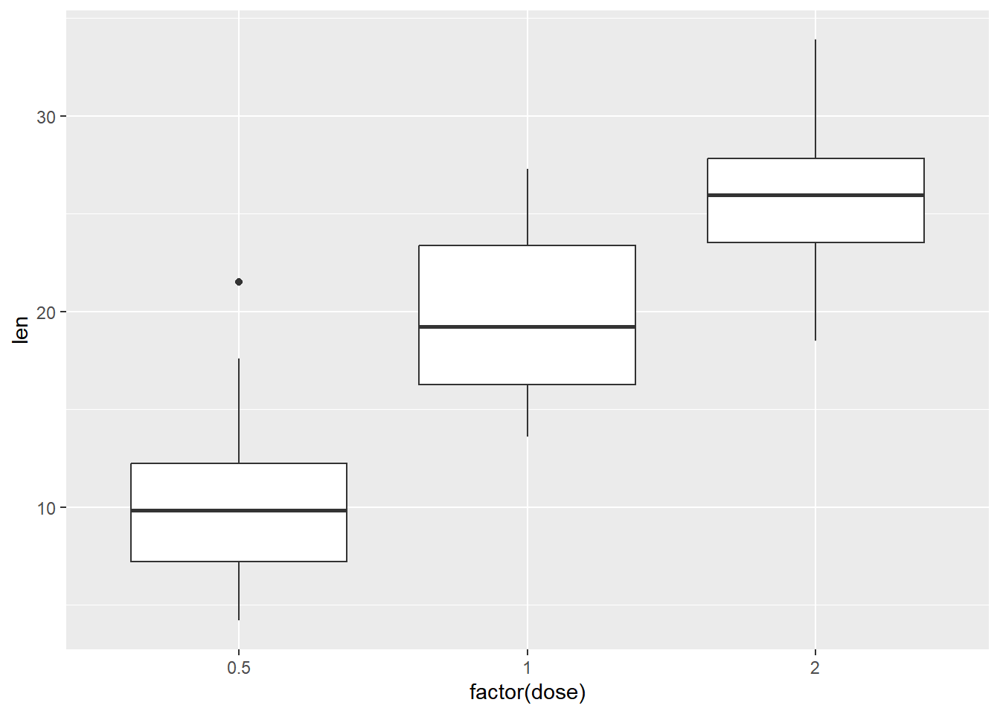
Use aov() to detect the effect of dose and supp on len. Save as a model object called ToothGrowth_aov.
Examine ToothGrowth_aov with summary() to determine if dose has a significant effect on tooth length.
ToothGrowth$dose <- as.factor(ToothGrowth$dose)
# Create ToothGrowth_aov
ToothGrowth_aov <- aov(len ~ supp + dose, data = ToothGrowth)
# Examine ToothGrowth_aov with summary()
summary(ToothGrowth_aov)## Df Sum Sq Mean Sq F value Pr(>F)
## supp 1 205 205 14.0 0.00043 ***
## dose 2 2426 1213 82.8 < 0.0000000000000002 ***
## Residuals 56 820 15
## ---
## Signif. codes: 0 '***' 0.001 '**' 0.01 '*' 0.05 '.' 0.1 ' ' 1This is called - Randomized Complete Block Design (RCBD) experiment.
Given the very small observed p-value for dose, it appears we have evidence to support the hypothesis that mean len is different by dose amount.
18.1.3 Hypothesis testing
Power and sample size
Power: probability that the test correctly rejects the null hypothesis when the alternative hypothesis is true.
- One “golden rule” in statistics is to aim to have 80% power in experiments.
Effect size: standardized measure of the difference you’re trying to detect.
Calculated as the difference between group means divided by the pooled standard deviation of the data.
It’s easier to detect a larger difference in means.
Sample size: How many experimental units you need to survey to detect the desired difference at the desired power.
library(pwr)
pwr.anova.test(k = 3, # number of groups in the comparison
n = 20, # number of observations per group
f = 0.2, # effect size
sig.level = 0.05,
power = NULL)18.1.3.1 One sided vs. Two-sided tests
alternative = two.sided, less, greater
Test to see if the mean of the length variable of ToothGrowth is less than 18.
# Less than
t.test(x = ToothGrowth$len,
alternative = "less",
mu = 18)##
## One Sample t-test
##
## data: ToothGrowth$len
## t = 0.8, df = 59, p-value = 0.8
## alternative hypothesis: true mean is less than 18
## 95 percent confidence interval:
## -Inf 20.5
## sample estimates:
## mean of x
## 18.8Test to see if the mean of the length variable of ToothGrowth is greater than 18.
# Greater than
t.test(x = ToothGrowth$len,
alternative = "greater",
mu = 18)##
## One Sample t-test
##
## data: ToothGrowth$len
## t = 0.8, df = 59, p-value = 0.2
## alternative hypothesis: true mean is greater than 18
## 95 percent confidence interval:
## 17.2 Inf
## sample estimates:
## mean of x
## 18.818.1.3.2 Power & Sample Size Calculations
One key part of designing an experiment is knowing the required sample size you’ll need to be able to test your hypothesis.
The pwr package provides a handy function, pwr.t.test(), which will calculate that for you. owever, you do need to know
desired significance level
test is one- or two-sided
data is from one sample, two samples, or paired
effect size
power
A power or sample size calculation is usually different each time you conduct one, and the details of the calculation strongly depend on what kind of experiment you’re designing and what your end goals are.
Calculate power using an effect size of 0.35, a sample size of 100 in each group, and a significance level of 0.10.
# Load the pwr package
library(pwr)## Warning: package 'pwr' was built under R version 4.3.2# Calculate power
pwr.t.test(n = 100,
d = 0.35,
sig.level = 0.10,
type = "two.sample",
alternative = "two.sided",
power = NULL)##
## Two-sample t test power calculation
##
## n = 100
## d = 0.35
## sig.level = 0.1
## power = 0.794
## alternative = two.sided
##
## NOTE: n is number in *each* groupCalculate the sample size needed with an effect size of 0.25, a significance level of 0.05, and a power of 0.8.
# Calculate sample size
pwr.t.test(n = NULL,
d = 0.25,
sig.level = 0.05,
type = "one.sample",
alternative = "greater",
power = 0.8)##
## One-sample t test power calculation
##
## n = 100
## d = 0.25
## sig.level = 0.05
## power = 0.8
## alternative = greater# Inspect output class
sample_est <- pwr.t.test(n = NULL,
d = 0.25,
sig.level = 0.05,
type = "one.sample",
alternative = "greater",
power = 0.8)
class(sample_est)## [1] "power.htest"The pwr package includes functions for calculating power and sample size for a variety of different tests
18.2 Basic Experiments
18.2.1 ANOVA & factor experiments
ANOVA
Used to compare 3+ groups
Won’t know which groups’ means are different without additional post hoc testing
Two ways to implement in R:
#one
model_1 <- lm(y ~ x, data = dataset)
anova(model_1)
#two
aov(y ~ x, data = dataset)18.2.1.1 Exploratory Data Analysis (EDA)
A sample of 1500 observations from the Lending Club dataset has been loaded for you and is called lendingclub. Let’s do some EDA on the data, in hopes that we’ll learn what the dataset contains.
lendingclub <- read_csv("data/lendclub.csv")
# Examine the variables with glimpse()
glimpse(lendingclub)## Rows: 1,500
## Columns: 12
## $ member_id <dbl> 55096114, 1555332, 1009151, 69524202, 72128084, 53…
## $ loan_amnt <dbl> 11000, 10000, 13000, 5000, 18000, 14000, 8000, 500…
## $ funded_amnt <dbl> 11000, 10000, 13000, 5000, 18000, 14000, 8000, 500…
## $ term <chr> "36 months", "36 months", "60 months", "36 months"…
## $ int_rate <dbl> 12.69, 6.62, 10.99, 12.05, 5.32, 16.99, 13.11, 7.8…
## $ emp_length <chr> "10+ years", "10+ years", "3 years", "10+ years", …
## $ home_ownership <chr> "RENT", "MORTGAGE", "MORTGAGE", "MORTGAGE", "MORTG…
## $ annual_inc <dbl> 51000, 40000, 78204, 51000, 96000, 47000, 40000, 3…
## $ verification_status <chr> "Not Verified", "Verified", "Not Verified", "Not V…
## $ loan_status <chr> "Current", "Fully Paid", "Fully Paid", "Current", …
## $ purpose <chr> "debt_consolidation", "debt_consolidation", "home_…
## $ grade <chr> "C", "A", "B", "C", "A", "D", "C", "A", "D", "B", …# Find median loan_amnt and mean int_rate, annual_inc
lendingclub %>% summarise(median(loan_amnt),
mean(int_rate),
mean(annual_inc))## # A tibble: 1 × 3
## `median(loan_amnt)` `mean(int_rate)` `mean(annual_inc)`
## <dbl> <dbl> <dbl>
## 1 13000 13.3 75736.The axes have been flipped for you using coord_flip() so the labels are easier to read.
# Use ggplot2 to build a bar chart of purpose
ggplot(data = lendingclub, aes(x = purpose)) +
geom_bar() +
coord_flip()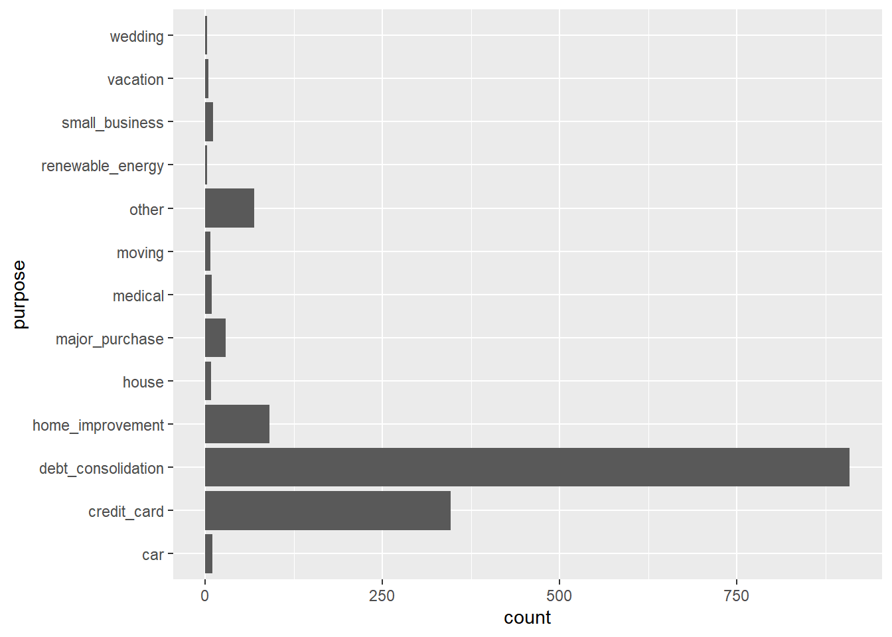
You can see that the original purpose variable were very detailed. By using recode() here, you created purpose_recode, which has a much more manageable 4 general levels (debt_related, big_purchase, home_related, life_change) that describe the purpose for people’s loans.
# Use recode() to create the new purpose_recode variable
lendingclub$purpose_recode <- lendingclub$purpose %>% recode(
"credit_card" = "debt_related",
"debt_consolidation" = "debt_related",
"medical" = "debt_related",
"car" = "big_purchase",
"major_purchase" = "big_purchase",
"vacation" = "big_purchase",
"moving" = "life_change",
"small_business" = "life_change",
"wedding" = "life_change",
"house" = "home_related",
"home_improvement" = "home_related")
unique(lendingclub$purpose_recode)## [1] "debt_related" "home_related" "big_purchase" "renewable_energy"
## [5] "other" "life_change"18.2.1.2 Single factor experiments
How does loan purpose affect amount funded?
Design an experiment where we examine how the loan purpose influences the amount funded, which is the money actually issued to the applicant.
\(H_0\): all of the mean funded amounts are equal across the levels of purpose_recode.
\(H_A\): at least one level of purpose_recode has a different mean.
These are the results of the linear regression.
# Build a linear regression model, purpose_recode_model
purpose_recode_model <- lm(funded_amnt ~ purpose_recode, data = lendingclub)
# Examine results of purpose_recode_model
summary(purpose_recode_model)##
## Call:
## lm(formula = funded_amnt ~ purpose_recode, data = lendingclub)
##
## Residuals:
## Min 1Q Median 3Q Max
## -14472 -6251 -1322 4678 25761
##
## Coefficients:
## Estimate Std. Error t value Pr(>|t|)
## (Intercept) 9888 1249 7.92 0.0000000000000047
## purpose_recodedebt_related 5434 1270 4.28 0.0000201591378533
## purpose_recodehome_related 4845 1501 3.23 0.0013
## purpose_recodelife_change 4095 2197 1.86 0.0625
## purpose_recodeother -649 1598 -0.41 0.6846
## purpose_recoderenewable_energy -1796 4943 -0.36 0.7164
##
## (Intercept) ***
## purpose_recodedebt_related ***
## purpose_recodehome_related **
## purpose_recodelife_change .
## purpose_recodeother
## purpose_recoderenewable_energy
## ---
## Signif. codes: 0 '***' 0.001 '**' 0.01 '*' 0.05 '.' 0.1 ' ' 1
##
## Residual standard error: 8280 on 1494 degrees of freedom
## Multiple R-squared: 0.0347, Adjusted R-squared: 0.0315
## F-statistic: 10.7 on 5 and 1494 DF, p-value: 0.00000000036Call anova() on model object.
# Get anova results and save as purpose_recode_anova
purpose_recode_anova <- anova(purpose_recode_model)
# Print purpose_recode_anova
purpose_recode_anova## Analysis of Variance Table
##
## Response: funded_amnt
## Df Sum Sq Mean Sq F value Pr(>F)
## purpose_recode 5 3688783338 737756668 10.8 0.00000000036 ***
## Residuals 1494 102533145566 68629950
## ---
## Signif. codes: 0 '***' 0.001 '**' 0.01 '*' 0.05 '.' 0.1 ' ' 1# Examine class of purpose_recode_anova
class(purpose_recode_anova)## [1] "anova" "data.frame"Results indicate that there is evidence to support the hypothesis that the mean loan amounts are different for at least one combination of purpose_recode’s levels.
18.2.1.3 Post-hoc test
The result of that ANOVA test was statistically significant with a very low p-value. This means we can reject the null hypothesis and accept the alternative hypothesis that at least one mean was different. But which one?
Here comes the post-hoc test. We should use Tukey’s HSD test, which stands for Honest Significant Difference.
TukeyHSD(aov_model, "independent_variable_name", conf.level = 0.9)
# Use aov() to build purpose_aov
purpose_aov <- aov(funded_amnt ~ purpose_recode, data = lendingclub)
# Conduct Tukey's HSD test to create tukey_output
tukey_output <- TukeyHSD(purpose_aov, "purpose_recode", conf.level = 0.95)
# Tidy tukey_output to make sense of the results
tidy(tukey_output)## # A tibble: 15 × 7
## term contrast null.value estimate conf.low conf.high adj.p.value
## <chr> <chr> <dbl> <dbl> <dbl> <dbl> <dbl>
## 1 purpose_recode debt_relat… 0 5434. 1808. 9059. 2.91e-4
## 2 purpose_recode home_relat… 0 4845. 562. 9128. 1.61e-2
## 3 purpose_recode life_chang… 0 4095. -2174. 10365. 4.25e-1
## 4 purpose_recode other-big_… 0 -649. -5210. 3911. 9.99e-1
## 5 purpose_recode renewable_… 0 -1796. -15902. 12309. 9.99e-1
## 6 purpose_recode home_relat… 0 -589. -3056. 1879. 9.84e-1
## 7 purpose_recode life_chang… 0 -1338. -6539. 3863. 9.78e-1
## 8 purpose_recode other-debt… 0 -6083. -9005. -3160. 5.32e-8
## 9 purpose_recode renewable_… 0 -7230. -20894. 6434. 6.58e-1
## 10 purpose_recode life_chang… 0 -750. -6429. 4929. 9.99e-1
## 11 purpose_recode other-home… 0 -5494. -9201. -1787. 3.58e-4
## 12 purpose_recode renewable_… 0 -6641. -20494. 7212. 7.46e-1
## 13 purpose_recode other-life… 0 -4745. -10636. 1147. 1.95e-1
## 14 purpose_recode renewable_… 0 -5892. -20482. 8698. 8.59e-1
## 15 purpose_recode renewable_… 0 -1147. -15088. 12794. 1.00e+0we can see that only a few of the mean differences are statistically significant, for example the differences in the means for the debt_related and big_purchase loan amounts.
In this case, these tiny p-values are most likely to be due to large sample size, and further tests would be required to determine what’s actually significant in the case of loans (known as the practical significance.)
18.2.1.4 Multiple Factor Experiments
We can examine more than one explanatory factor in a multiple factor experiment.
Use aov() to build a linear model and ANOVA in one step, examining how purpose_recode and employment length (emp_length) affect the funded amount.
# Use aov() to build purpose_emp_aov
purpose_emp_aov <- aov(funded_amnt ~ purpose_recode + emp_length, data = lendingclub)
# Print purpose_emp_aov to the console
purpose_emp_aov## Call:
## aov(formula = funded_amnt ~ purpose_recode + emp_length, data = lendingclub)
##
## Terms:
## purpose_recode emp_length Residuals
## Sum of Squares 3688783338 2044273211 100488872355
## Deg. of Freedom 5 11 1483
##
## Residual standard error: 8232
## Estimated effects may be unbalancedThe printed purpose_emp_aov does not show p-values, which we might be interested in. Display those by calling summary() on the aov object.
# Call summary() to see the p-values
summary(purpose_emp_aov)## Df Sum Sq Mean Sq F value Pr(>F)
## purpose_recode 5 3688783338 737756668 10.89 0.00000000026 ***
## emp_length 11 2044273211 185843019 2.74 0.0016 **
## Residuals 1483 100488872355 67760534
## ---
## Signif. codes: 0 '***' 0.001 '**' 0.01 '*' 0.05 '.' 0.1 ' ' 118.2.2 Model validation
Post-modeling model validation
Residual plot
QQ-plot for normality
Test ANOVA assumptions
- Homogeneity of variances
Try non-parametric alternatives to ANOVA
18.2.2.1 Pre-modeling EDA
Examine what effect their Lending Club-assigned loan grade variable has on the interest rate, int_rate.
# Examine the summary of int_rate, range and interquartile range
summary(lendingclub$int_rate)## Min. 1st Qu. Median Mean 3rd Qu. Max.
## 5.32 9.99 12.99 13.31 16.29 26.77# Examine int_rate by grade
lendingclub %>%
group_by(grade) %>%
summarize(mean = mean(int_rate),
var = var(int_rate),
median = median(int_rate))## # A tibble: 7 × 4
## grade mean var median
## <chr> <dbl> <dbl> <dbl>
## 1 A 7.27 0.961 7.26
## 2 B 10.9 2.08 11.0
## 3 C 14.0 1.42 14.0
## 4 D 17.4 1.62 17.6
## 5 E 20.1 2.71 20.0
## 6 F 23.6 2.87 23.5
## 7 G 26.1 0.198 25.9# Make a boxplot of int_rate by grade
ggplot(lendingclub, aes(x = grade, y = int_rate)) +
geom_boxplot()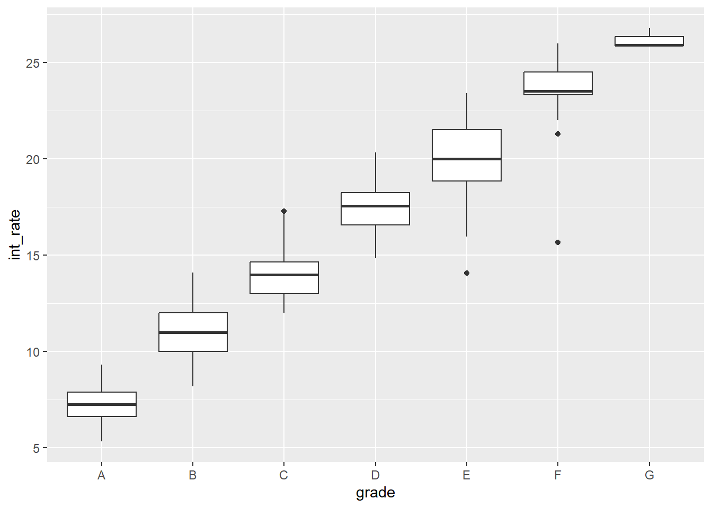
# Use aov() to create grade_aov and call summary() to print results
grade_aov <- aov(int_rate ~ grade, data = lendingclub)
summary(grade_aov)## Df Sum Sq Mean Sq F value Pr(>F)
## grade 6 27013 4502 2637 <0.0000000000000002 ***
## Residuals 1493 2549 2
## ---
## Signif. codes: 0 '***' 0.001 '**' 0.01 '*' 0.05 '.' 0.1 ' ' 1You can see from the numeric summary and the boxplot that grade seems to heavily influence interest rate. Therefore, the linear model results indicating that int_rate is significantly different by grade are unsurprising.
18.2.2.2 Post-modeling validation
In the last exercise, we found that int_rate does differ by grade. Now we should validate this model, which for linear regression means examining the Residuals vs. Fitted and Normal Q-Q plots.
plot(model)
Another assumption of ANOVA and linear modeling is homogeneity of variance. Homogeneity means “same”.
e.g, the variance of
int_rateis the same for each level ofgrade.Using
bartlett.test(formula, data)to test.
Produce the model diagnostic plots.
# For a 2x2 grid of plots:
par(mfrow=c(2, 2))
# Plot grade_aov
plot(grade_aov)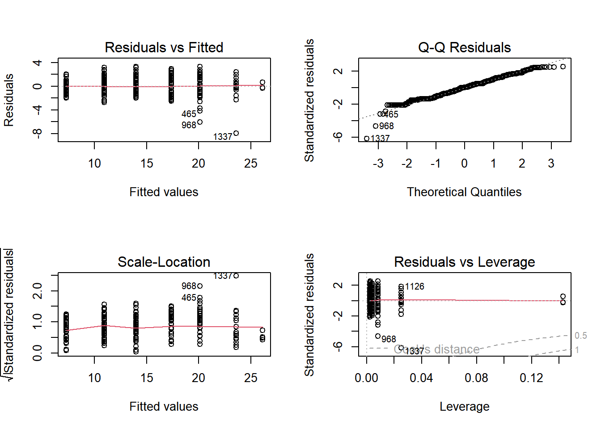
The residuals on this model are okay, though the residuals on G have a much smaller range than any other level of grade (the dots are far less spread out.) The Q-Q plot, however, shows that the residuals are fairly normal.
Test for homogeneity of variances using bartlett.test(). non.sig means data is homogeneity.
# Bartlett's test for homogeneity of variance
bartlett.test(int_rate ~ grade, lendingclub)##
## Bartlett test of homogeneity of variances
##
## data: int_rate by grade
## Bartlett's K-squared = 79, df = 6, p-value = 0.000000000000007However, given the highly significant p-value from Bartlett’s test, the assumption of homogeneity of variances is violated.
18.2.2.3 Kruskal-Wallis rank sum test
Given that we found in the last exercise that the homogeneity of variance assumption of linear modeling was violated, we may want to try an alternative.
One non-parametric alternative to ANOVA is the Kruskal-Wallis rank sum test. It is an extension of the Mann-Whitney U test for when there are more than two groups.
kruskal.test(formula, data)
Use kruskal.test() to examine whether int_rate varies by grade when a non-parametric model is employed.
# Conduct the Kruskal-Wallis rank sum test
kruskal.test(int_rate ~ grade,
data = lendingclub)##
## Kruskal-Wallis rank sum test
##
## data: int_rate by grade
## Kruskal-Wallis chi-squared = 1366, df = 6, p-value <0.0000000000000002The low p-value indicates that int_rate varies by grade.
18.2.3 A/B testing
A type of controlled experiment with only two variants of something. (只有一個獨變項，且僅一操弄)
e.g, How many consumers click through to create an account based on two different website headers?

Calculate sample size, given power, significance level, and effect size
18.2.3.1 Sample size for A/B test
We’ll be testing the mean loan_amnt, which is the requested amount of money the loan applicants ask for, based on which color header (green or blue) that they saw on the Lending Club website.
calculate the required sample size for each group with d = 0.2, a power of 0.8, and a 0.05 significance level.
# Use the correct function from pwr to find the sample size
pwr.t.test(
d = 0.2,
n = NULL,
power = 0.8,
sig.level = 0.05,
type = "two.sample",
alternative = "two.sided")##
## Two-sample t test power calculation
##
## n = 393
## d = 0.2
## sig.level = 0.05
## power = 0.8
## alternative = two.sided
##
## NOTE: n is number in *each* groupWe need about 400 people per group to reach our desired power in this A/B test.
18.2.3.2 Basic A/B test
The A/B test was run until there were 500 applicants in each group. Each applicant has been labeled as group A or B. Where A was shown a mint green website header and B was shown a light blue website header.
lendingclub_ab <- read_delim("data/lendingclub_ab.txt", delim = ",")
glimpse(lendingclub_ab)## Rows: 1,000
## Columns: 75
## $ id <dbl> 11976148, 1203719, 54998739, 5801830, 3158…
## $ member_id <dbl> 13968311, 1444848, 58569477, 7233534, 3418…
## $ loan_amnt <dbl> 8000, 1200, 15000, 9000, 16000, 15600, 240…
## $ funded_amnt <dbl> 8000, 1200, 15000, 9000, 16000, 15600, 240…
## $ funded_amnt_inv <dbl> 8000, 1200, 15000, 9000, 16000, 15600, 240…
## $ term <chr> "36 months", "36 months", "36 months", "60…
## $ int_rate <dbl> 9.67, 12.12, 12.69, 12.12, 11.67, 15.10, 1…
## $ installment <dbl> 256.9, 39.9, 503.2, 200.8, 528.9, 371.9, 8…
## $ grade <chr> "B", "B", "C", "B", "B", "C", "D", "C", "C…
## $ sub_grade <chr> "B1", "B3", "C2", "B3", "B4", "C2", "D1", …
## $ emp_title <chr> "Escalation Manager", "new vanderbilt reha…
## $ emp_length <chr> "9 years", "4 years", "10+ years", "10+ ye…
## $ home_ownership <chr> "MORTGAGE", "RENT", "MORTGAGE", "RENT", "M…
## $ annual_inc <dbl> 74000, 58000, 109400, 85000, 250000, 43000…
## $ verification_status <chr> "Verified", "Not Verified", "Not Verified"…
## $ issue_d <chr> "Feb-2014", "Apr-2012", "Jul-2015", "Jul-2…
## $ loan_status <chr> "Current", "Fully Paid", "Current", "Fully…
## $ pymnt_plan <chr> "n", "n", "n", "n", "n", "n", "n", "n", "n…
## $ url <chr> "https://www.lendingclub.com/browse/loanDe…
## $ desc <chr> NA, NA, NA, NA, NA, NA, NA, NA, NA, NA, NA…
## $ purpose <chr> "major_purchase", "credit_card", "debt_con…
## $ title <chr> "Major purchase", "Credit Card Loan", "Deb…
## $ zip_code <chr> "492xx", "103xx", "935xx", "891xx", "300xx…
## $ addr_state <chr> "MI", "NY", "CA", "NV", "GA", "NJ", "IN", …
## $ dti <dbl> 7.49, 13.50, 26.18, 7.02, 19.65, 13.71, 22…
## $ delinq_2yrs <dbl> 0, 0, 0, 1, 0, 0, 0, 2, 0, 1, 0, 0, 1, 0, …
## $ earliest_cr_line <chr> "Aug-2001", "Jul-2003", "May-1996", "Mar-1…
## $ inq_last_6mths <dbl> 0, 0, 2, 0, 0, 1, 1, 1, 1, 3, 0, 1, 3, 3, …
## $ mths_since_last_delinq <dbl> 24, NA, NA, 10, NA, NA, NA, 13, 57, 17, 67…
## $ mths_since_last_record <dbl> NA, NA, 117, NA, NA, NA, NA, NA, NA, NA, N…
## $ open_acc <dbl> 6, 22, 16, 15, 18, 8, 18, 33, 16, 10, 6, 1…
## $ pub_rec <dbl> 0, 0, 1, 0, 0, 0, 0, 0, 0, 0, 0, 0, 0, 16,…
## $ revol_bal <dbl> 3750, 21826, 15250, 28024, 46894, 10292, 8…
## $ revol_util <dbl> 61.5, 66.9, 71.0, 19.6, 68.9, 63.9, 63.1, …
## $ total_acc <dbl> 18, 35, 24, 38, 21, 20, 32, 52, 32, 22, 25…
## $ initial_list_status <chr> "w", "f", "w", "f", "f", "f", "f", "f", "f…
## $ out_prncp <dbl> 3388, 0, 12877, 0, 10002, 0, 2073, 22198, …
## $ out_prncp_inv <dbl> 3388, 0, 12877, 0, 10002, 0, 2073, 21846, …
## $ total_pymnt <dbl> 5652, 1437, 3008, 10638, 7913, 15990, 511,…
## $ total_pymnt_inv <dbl> 5652, 1437, 3008, 10638, 7913, 15990, 511,…
## $ total_rec_prncp <dbl> 4612, 1200, 2123, 9000, 5998, 15600, 327, …
## $ total_rec_int <dbl> 1040, 237, 886, 1638, 1916, 390, 185, 1325…
## $ total_rec_late_fee <dbl> 0, 0, 0, 0, 0, 0, 0, 0, 0, 0, 0, 0, 0, 0, …
## $ recoveries <dbl> 0, 0, 0, 0, 0, 0, 0, 0, 0, 0, 0, 0, 0, 0, …
## $ collection_recovery_fee <dbl> 0, 0, 0, 0, 0, 0, 0, 0, 0, 0, 0, 0, 0, 0, …
## $ last_pymnt_d <chr> "Dec-2015", "Apr-2015", "Jan-2016", "Mar-2…
## $ last_pymnt_amnt <dbl> 256.9, 41.1, 503.2, 6829.8, 528.9, 15618.6…
## $ next_pymnt_d <chr> "Feb-2016", NA, "Feb-2016", NA, "Feb-2016"…
## $ last_credit_pull_d <chr> "Jan-2016", "Apr-2015", "Jan-2016", "Jan-2…
## $ collections_12_mths_ex_med <dbl> 0, 0, 0, 0, 0, 0, 0, 1, 0, 0, 0, 0, 0, 0, …
## $ mths_since_last_major_derog <dbl> NA, NA, NA, NA, NA, NA, NA, 13, 57, 35, 67…
## $ policy_code <dbl> 1, 1, 1, 1, 1, 1, 1, 1, 1, 1, 1, 1, 1, 1, …
## $ application_type <chr> "INDIVIDUAL", "INDIVIDUAL", "INDIVIDUAL", …
## $ annual_inc_joint <lgl> NA, NA, NA, NA, NA, NA, NA, NA, NA, NA, NA…
## $ dti_joint <lgl> NA, NA, NA, NA, NA, NA, NA, NA, NA, NA, NA…
## $ verification_status_joint <lgl> NA, NA, NA, NA, NA, NA, NA, NA, NA, NA, NA…
## $ acc_now_delinq <dbl> 0, 0, 0, 0, 0, 0, 0, 0, 0, 0, 0, 0, 0, 0, …
## $ tot_coll_amt <dbl> 313, NA, 0, 0, 0, 0, 0, 0, 0, 0, 0, 0, 0, …
## $ tot_cur_bal <dbl> 291589, NA, 367506, 28024, 134267, 17546, …
## $ open_acc_6m <dbl> NA, NA, NA, NA, NA, NA, NA, NA, NA, NA, NA…
## $ open_il_6m <dbl> NA, NA, NA, NA, NA, NA, NA, NA, NA, NA, NA…
## $ open_il_12m <dbl> NA, NA, NA, NA, NA, NA, NA, NA, NA, NA, NA…
## $ open_il_24m <dbl> NA, NA, NA, NA, NA, NA, NA, NA, NA, NA, NA…
## $ mths_since_rcnt_il <dbl> NA, NA, NA, NA, NA, NA, NA, NA, NA, NA, NA…
## $ total_bal_il <dbl> NA, NA, NA, NA, NA, NA, NA, NA, NA, NA, NA…
## $ il_util <dbl> NA, NA, NA, NA, NA, NA, NA, NA, NA, NA, NA…
## $ open_rv_12m <dbl> NA, NA, NA, NA, NA, NA, NA, NA, NA, NA, NA…
## $ open_rv_24m <dbl> NA, NA, NA, NA, NA, NA, NA, NA, NA, NA, NA…
## $ max_bal_bc <dbl> NA, NA, NA, NA, NA, NA, NA, NA, NA, NA, NA…
## $ all_util <dbl> NA, NA, NA, NA, NA, NA, NA, NA, NA, NA, NA…
## $ total_rev_hi_lim <dbl> 6100, NA, 21400, 143100, 68100, 16100, 139…
## $ inq_fi <dbl> NA, NA, NA, NA, NA, NA, NA, NA, NA, NA, NA…
## $ total_cu_tl <dbl> NA, NA, NA, NA, NA, NA, NA, NA, NA, NA, NA…
## $ inq_last_12m <dbl> NA, NA, NA, NA, NA, NA, NA, NA, NA, NA, NA…
## $ Group <chr> "A", "A", "A", "A", "A", "A", "A", "A", "A…Conduct the proper test to see if the mean of loan_amnt is different between the two groups.
# Plot the A/B test results
ggplot(lendingclub_ab, aes(x = Group, y = loan_amnt)) +
geom_boxplot()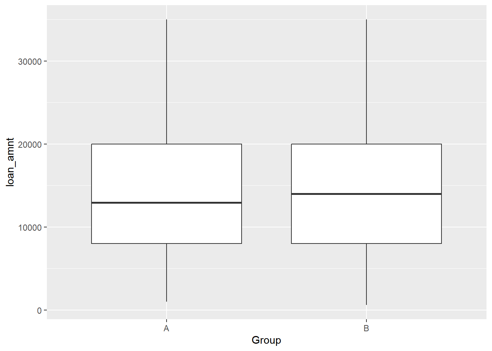
# Conduct a two-sided t-test
t.test(loan_amnt ~ Group, data = lendingclub_ab)##
## Welch Two Sample t-test
##
## data: loan_amnt by Group
## t = -0.6, df = 997, p-value = 0.6
## alternative hypothesis: true difference in means between group A and group B is not equal to 0
## 95 percent confidence interval:
## -1377 748
## sample estimates:
## mean in group A mean in group B
## 14723 15038By looking at both the boxplot and the results of the t-test, it seems that there is no compelling evidence to support the hypothesis that there is a difference between the two A/B test groups’ mean loan_amnt, a result which you would use to help make data-driven decisions at Lending Club.
18.2.3.3 Multivariable experiments
The point of an A/B test is that only one thing is changed and the effect of that change is measured.
On the other hand, a multivariate experiment, is where a few things are changed (similar to a multiple factor experiment.)
Let’s examine how Group, grade, and verification_status affect loan_amnt in the lendingclub_ab dataset.
# Build lendingclub_multi
lendingclub_multi <- lm(loan_amnt ~ Group + grade + verification_status, lendingclub_ab)
# Examine lendingclub_multi results
tidy(lendingclub_multi)## # A tibble: 10 × 5
## term estimate std.error statistic p.value
## <chr> <dbl> <dbl> <dbl> <dbl>
## 1 (Intercept) 11244. 792. 14.2 8.44e-42
## 2 GroupB 205. 515. 0.398 6.91e- 1
## 3 gradeB -975. 817. -1.19 2.33e- 1
## 4 gradeC -631. 806. -0.783 4.34e- 1
## 5 gradeD 718. 917. 0.783 4.34e- 1
## 6 gradeE 1477. 1208. 1.22 2.22e- 1
## 7 gradeF 5453. 1942. 2.81 5.09e- 3
## 8 gradeG 3490. 3396. 1.03 3.04e- 1
## 9 verification_statusSource Verified 4528. 637. 7.10 2.30e-12
## 10 verification_statusVerified 5900. 668. 8.84 4.41e-18From the results, verification status and having an F grade are the factors in this model that have a significant effect on loan amount.
18.3 Block Designs
18.3.1 Intro to sampling
Probability Sampling: probability is used to select the sample (in various ways)
Simple Random Sampling (SRS)
Every unit in a population has an equal probability of being sampled.
sample()
Stratified Sampling
Splitting your population by some strata variable.
Taking a simple random sample inside of each stratified group.
dataset %>% group_by(strata_variable) %>% slice_sample()
Cluster Sampling
Divide the population into groups called clusters
cluster(dataset, cluster_var_name, number_to_select, method = "option")
Systematic Sampling
Choosing a sample in a systematic way.
Best implemented in R with a custom function.
Multi-stage Sampling
- Combines one or more sampling methods.
Non-probability Sampling: probability is not used to select the sample
Voluntary response:
- Whoever agrees to respond is the sample.
Convenience sampling:
- Subjects convenient to the researcher are chosen.
18.3.1.1 NHANES dataset construction
NHANES = National Health and Nutrition Examination Survey
Conducted by the National Center for Health Statistics (NCHS), a division of the Centers for Disease Control (CDC).
Data collected a variety of ways, including interviews & a physical exam.
Questions cover medical, dental, socioeconomic, dietary, and general health-related conditions.
# Import the three datasets using read_xpt()
nhanes_demo <- read_csv("data/nhanes_demo.csv")## Rows: 9971 Columns: 47
## ── Column specification ──────────────────────
## Delimiter: ","
## dbl (47): seqn, sddsrvyr, ridstatr, riagendr, ridageyr, ridagemn, ridreth1, ...
##
## ℹ Use `spec()` to retrieve the full column specification for this data.
## ℹ Specify the column types or set `show_col_types = FALSE` to quiet this message.nhanes_medical <- read_csv("data/nhanes_medicalconditions.csv")## Warning: One or more parsing issues, call `problems()`
## on your data frame for details, e.g.:
## dat <- vroom(...)
## problems(dat)## Rows: 9575 Columns: 90
## ── Column specification ──────────────────────
## Delimiter: ","
## dbl (74): seqn, mcq010, mcq025, mcq035, mcq040, mcq050, agq030, mcq053, mcq0...
## lgl (16): mcq230c, mcq230d, mcq240aa, mcq240bb, mcq240d, mcq240dk, mcq240h, ...
##
## ℹ Use `spec()` to retrieve the full column specification for this data.
## ℹ Specify the column types or set `show_col_types = FALSE` to quiet this message.nhanes_bodymeasures <- read_csv("data/nhanes_bodymeasures.csv")## Rows: 9544 Columns: 26
## ── Column specification ──────────────────────
## Delimiter: ","
## dbl (25): seqn, bmdstats, bmxwt, bmiwt, bmxrecum, bmirecum, bmxhead, bmxht, ...
## lgl (1): bmihead
##
## ℹ Use `spec()` to retrieve the full column specification for this data.
## ℹ Specify the column types or set `show_col_types = FALSE` to quiet this message.# Merge the 3 datasets you just created to create nhanes_combined
nhanes_combined <- list(nhanes_demo, nhanes_medical, nhanes_bodymeasures) %>%
Reduce(function(df1, df2) inner_join(df1, df2, by = "seqn"), .)
glimpse(nhanes_combined)## Rows: 9,165
## Columns: 161
## $ seqn <dbl> 83732, 83733, 83734, 83735, 83736, 83737, 83738, 83739, 83740…
## $ sddsrvyr <dbl> 9, 9, 9, 9, 9, 9, 9, 9, 9, 9, 9, 9, 9, 9, 9, 9, 9, 9, 9, 9, 9…
## $ ridstatr <dbl> 2, 2, 2, 2, 2, 2, 2, 2, 2, 2, 2, 2, 2, 2, 2, 2, 2, 2, 2, 2, 2…
## $ riagendr <dbl> 1, 1, 1, 2, 2, 2, 2, 1, 1, 1, 2, 1, 1, 2, 2, 1, 1, 2, 1, 2, 2…
## $ ridageyr <dbl> 62, 53, 78, 56, 42, 72, 11, 4, 1, 22, 32, 18, 56, 15, 4, 46, …
## $ ridagemn <dbl> NA, NA, NA, NA, NA, NA, NA, NA, 13, NA, NA, NA, NA, NA, NA, N…
## $ ridreth1 <dbl> 3, 3, 3, 3, 4, 1, 1, 3, 2, 4, 1, 5, 4, 3, 5, 3, 4, 3, 5, 1, 2…
## $ ridreth3 <dbl> 3, 3, 3, 3, 4, 1, 1, 3, 2, 4, 1, 6, 4, 3, 6, 3, 4, 3, 7, 1, 2…
## $ ridexmon <dbl> 1, 1, 2, 2, 2, 1, 1, 2, 2, 1, 1, 1, 1, 2, 1, 1, 2, 1, 1, 1, 1…
## $ ridexagm <dbl> NA, NA, NA, NA, NA, NA, 141, 54, 14, NA, NA, 217, NA, 185, 52…
## $ dmqmiliz <dbl> 2, 2, 1, 2, 2, 2, NA, NA, NA, 2, 2, 2, 2, NA, NA, 2, NA, 2, 2…
## $ dmqadfc <dbl> NA, NA, 2, NA, NA, NA, NA, NA, NA, NA, NA, NA, NA, NA, NA, NA…
## $ dmdborn4 <dbl> 1, 2, 1, 1, 1, 2, 1, 1, 1, 1, 2, 1, 1, 1, 2, 2, 1, 1, 1, 1, 1…
## $ dmdcitzn <dbl> 1, 2, 1, 1, 1, 2, 1, 1, 1, 1, 2, 1, 1, 1, 2, 1, 1, 1, 1, 1, 1…
## $ dmdyrsus <dbl> NA, 7, NA, NA, NA, 2, NA, NA, NA, NA, 6, NA, NA, NA, 2, 8, NA…
## $ dmdeduc3 <dbl> NA, NA, NA, NA, NA, NA, 6, NA, NA, NA, NA, 11, NA, 9, NA, NA,…
## $ dmdeduc2 <dbl> 5, 3, 3, 5, 4, 2, NA, NA, NA, 4, 4, NA, 3, NA, NA, 5, NA, NA,…
## $ dmdmartl <dbl> 1, 3, 1, 6, 3, 4, NA, NA, NA, 5, 1, NA, 3, NA, NA, 6, NA, NA,…
## $ ridexprg <dbl> NA, NA, NA, NA, 1, NA, NA, NA, NA, NA, 2, NA, NA, NA, NA, NA,…
## $ sialang <dbl> 1, 1, 1, 1, 1, 2, 1, 1, 1, 1, 1, 1, 1, 1, 1, 1, 1, 1, 1, 1, 1…
## $ siaproxy <dbl> 2, 2, 2, 2, 2, 2, 1, 1, 1, 2, 2, 2, 2, 1, 1, 2, 1, 2, 2, 2, 2…
## $ siaintrp <dbl> 2, 2, 2, 2, 2, 1, 2, 2, 2, 2, 2, 2, 2, 2, 1, 2, 2, 2, 2, 2, 2…
## $ fialang <dbl> 1, 1, 1, 1, 1, 1, 1, 1, 2, 1, 1, 1, 1, 1, 1, 1, 1, 1, 1, 1, 1…
## $ fiaproxy <dbl> 2, 2, 2, 2, 2, 2, 2, 2, 2, 2, 2, 2, 2, 2, 2, 2, 2, 2, 2, 2, 2…
## $ fiaintrp <dbl> 2, 2, 2, 2, 2, 2, 2, 2, 2, 2, 2, 2, 2, 2, 1, 2, 2, 2, 2, 2, 2…
## $ mialang <dbl> 1, 1, 1, 1, 1, 1, 1, NA, NA, 1, 1, NA, 1, 1, NA, 1, NA, 1, 1,…
## $ miaproxy <dbl> 2, 2, 2, 2, 2, 2, 2, NA, NA, 2, 2, NA, 2, 2, NA, 2, NA, 2, 2,…
## $ miaintrp <dbl> 2, 2, 2, 2, 2, 2, 2, NA, NA, 2, 2, NA, 2, 2, NA, 2, NA, 2, 2,…
## $ aialanga <dbl> 1, 1, NA, 1, 1, NA, 1, NA, NA, 1, 1, 1, 1, 1, NA, 1, NA, 1, 1…
## $ dmdhhsiz <dbl> 2, 1, 2, 1, 5, 5, 5, 5, 7, 3, 4, 3, 1, 3, 4, 2, 6, 5, 5, 6, 2…
## $ dmdfmsiz <dbl> 2, 1, 2, 1, 5, 5, 5, 5, 7, 3, 4, 3, 1, 3, 4, 2, 6, 5, 1, 6, 2…
## $ dmdhhsza <dbl> 0, 0, 0, 0, 0, 1, 0, 2, 2, 0, 1, 0, 0, 0, 1, 0, 3, 0, 0, 1, 0…
## $ dmdhhszb <dbl> 0, 0, 0, 0, 2, 1, 2, 1, 2, 0, 1, 0, 0, 2, 1, 0, 0, 1, 2, 2, 0…
## $ dmdhhsze <dbl> 1, 0, 2, 0, 0, 1, 1, 0, 0, 0, 0, 0, 0, 0, 0, 0, 0, 0, 0, 2, 0…
## $ dmdhrgnd <dbl> 1, 1, 2, 2, 2, 1, 2, 2, 2, 2, 1, 1, 1, 2, 1, 1, 2, 1, 1, 2, 2…
## $ dmdhrage <dbl> 62, 53, 79, 56, 42, 34, 68, 35, 48, 47, 31, 55, 56, 42, 45, 4…
## $ dmdhrbr4 <dbl> 1, 2, 1, 1, 1, 2, 2, 1, 2, 1, 1, 2, 1, 1, NA, 2, 1, 1, NA, 1,…
## $ dmdhredu <dbl> 5, 3, 3, 5, 4, 5, 1, 5, 9, 4, 4, 5, 3, 4, NA, 5, 4, 4, NA, 2,…
## $ dmdhrmar <dbl> 1, 3, 1, 6, 3, 1, 2, 1, 5, 1, 1, 1, 3, 5, 1, 6, 5, 1, 1, 1, 6…
## $ dmdhsedu <dbl> 3, NA, 3, NA, NA, 5, NA, 5, NA, 5, 4, 4, NA, NA, 4, NA, NA, 4…
## $ wtint2yr <dbl> 134671, 24329, 12400, 102718, 17628, 11252, 9965, 44750, 9892…
## $ wtmec2yr <dbl> 135630, 25282, 12576, 102079, 18235, 10879, 9861, 46173, 1096…
## $ sdmvpsu <dbl> 1, 1, 1, 1, 2, 1, 1, 2, 1, 2, 1, 2, 2, 2, 2, 1, 2, 2, 1, 1, 1…
## $ sdmvstra <dbl> 125, 125, 131, 131, 126, 128, 120, 124, 119, 128, 125, 122, 1…
## $ indhhin2 <dbl> 10, 4, 5, 10, 7, 14, 6, 15, 77, 7, 6, 15, 3, 4, 12, 3, 6, 14,…
## $ indfmin2 <dbl> 10, 4, 5, 10, 7, 14, 6, 15, 77, 7, 6, 15, 3, 4, 12, 3, 6, 14,…
## $ indfmpir <dbl> 4.39, 1.32, 1.51, 5.00, 1.23, 2.82, 1.18, 4.22, NA, 2.08, 1.0…
## $ mcq010 <dbl> 2, 2, 1, 2, 1, 2, 2, 2, 2, 2, 2, 2, 2, 2, 2, 1, 2, 2, 1, 2, 1…
## $ mcq025 <dbl> NA, NA, 60, NA, 10, NA, NA, NA, NA, NA, NA, NA, NA, NA, NA, 1…
## $ mcq035 <dbl> NA, NA, 1, NA, 2, NA, NA, NA, NA, NA, NA, NA, NA, NA, NA, 2, …
## $ mcq040 <dbl> NA, NA, 2, NA, NA, NA, NA, NA, NA, NA, NA, NA, NA, NA, NA, NA…
## $ mcq050 <dbl> NA, NA, 2, NA, NA, NA, NA, NA, NA, NA, NA, NA, NA, NA, NA, NA…
## $ agq030 <dbl> NA, NA, 1, NA, NA, NA, NA, NA, NA, NA, NA, NA, NA, NA, NA, NA…
## $ mcq053 <dbl> 2, 2, 2, 2, 2, 2, 2, 2, 2, 2, 2, 2, 2, 2, 2, 2, 2, 2, 2, 2, 2…
## $ mcq080 <dbl> 1, 2, 1, 1, 2, 1, NA, NA, NA, 1, 2, 1, 1, NA, NA, 1, NA, 2, 2…
## $ mcq092 <dbl> 2, 2, 2, 2, 2, 2, 2, NA, NA, 2, 2, 2, 2, 2, NA, 2, NA, 2, 2, …
## $ mcd093 <dbl> NA, NA, NA, NA, NA, NA, NA, NA, NA, NA, NA, NA, NA, NA, NA, N…
## $ mcq149 <dbl> NA, NA, NA, NA, NA, NA, 2, NA, NA, NA, NA, NA, NA, NA, NA, NA…
## $ mcq151 <dbl> NA, NA, NA, NA, NA, NA, NA, NA, NA, NA, NA, NA, NA, NA, NA, N…
## $ mcq160a <dbl> 1, 2, 1, 2, 1, 2, NA, NA, NA, 2, 2, NA, 2, NA, NA, 1, NA, NA,…
## $ mcq180a <dbl> 40, NA, 55, NA, 10, NA, NA, NA, NA, NA, NA, NA, NA, NA, NA, 4…
## $ mcq195 <dbl> 1, NA, 4, NA, 9, NA, NA, NA, NA, NA, NA, NA, NA, NA, NA, 2, N…
## $ mcq160n <dbl> 2, 2, 2, 2, 2, 2, NA, NA, NA, 2, 2, NA, 1, NA, NA, 2, NA, NA,…
## $ mcq180n <dbl> NA, NA, NA, NA, NA, NA, NA, NA, NA, NA, NA, NA, 20, NA, NA, N…
## $ mcq160b <dbl> 2, 2, 2, 2, 2, 2, NA, NA, NA, 2, 2, NA, 1, NA, NA, 2, NA, NA,…
## $ mcq180b <dbl> NA, NA, NA, NA, NA, NA, NA, NA, NA, NA, NA, NA, 53, NA, NA, N…
## $ mcq160c <dbl> 2, 2, 2, 2, 2, 2, NA, NA, NA, 2, 2, NA, 2, NA, NA, 2, NA, NA,…
## $ mcq180c <dbl> NA, NA, NA, NA, NA, NA, NA, NA, NA, NA, NA, NA, NA, NA, NA, N…
## $ mcq160d <dbl> 2, 2, 2, 2, 2, 2, NA, NA, NA, 2, 2, NA, 2, NA, NA, 2, NA, NA,…
## $ mcq180d <dbl> NA, NA, NA, NA, NA, NA, NA, NA, NA, NA, NA, NA, NA, NA, NA, N…
## $ mcq160e <dbl> 2, 2, 1, 2, 2, 2, NA, NA, NA, 2, 2, NA, 1, NA, NA, 2, NA, NA,…
## $ mcq180e <dbl> NA, NA, 58, NA, NA, NA, NA, NA, NA, NA, NA, NA, 53, NA, NA, N…
## $ mcq160f <dbl> 2, 2, 2, 2, 2, 2, NA, NA, NA, 2, 2, NA, 2, NA, NA, 2, NA, NA,…
## $ mcq180f <dbl> NA, NA, NA, NA, NA, NA, NA, NA, NA, NA, NA, NA, NA, NA, NA, N…
## $ mcq160g <dbl> 2, 2, 1, 2, 2, 2, NA, NA, NA, 2, 2, NA, 2, NA, NA, 2, NA, NA,…
## $ mcq180g <dbl> NA, NA, 59, NA, NA, NA, NA, NA, NA, NA, NA, NA, NA, NA, NA, N…
## $ mcq160m <dbl> 2, 2, 1, 2, 2, 2, NA, NA, NA, 2, 2, NA, 2, NA, NA, 2, NA, NA,…
## $ mcq170m <dbl> NA, NA, 2, NA, NA, NA, NA, NA, NA, NA, NA, NA, NA, NA, NA, NA…
## $ mcq180m <dbl> NA, NA, 39, NA, NA, NA, NA, NA, NA, NA, NA, NA, NA, NA, NA, N…
## $ mcq160k <dbl> 2, 2, 2, 2, 2, 2, NA, NA, NA, 2, 2, NA, 2, NA, NA, 2, NA, NA,…
## $ mcq170k <dbl> NA, NA, NA, NA, NA, NA, NA, NA, NA, NA, NA, NA, NA, NA, NA, N…
## $ mcq180k <dbl> NA, NA, NA, NA, NA, NA, NA, NA, NA, NA, NA, NA, NA, NA, NA, N…
## $ mcq160l <dbl> 2, 2, 1, 2, 2, 2, NA, NA, NA, 2, 2, NA, 2, NA, NA, 2, NA, NA,…
## $ mcq170l <dbl> NA, NA, 1, NA, NA, NA, NA, NA, NA, NA, NA, NA, NA, NA, NA, NA…
## $ mcq180l <dbl> NA, NA, 11, NA, NA, NA, NA, NA, NA, NA, NA, NA, NA, NA, NA, N…
## $ mcq160o <dbl> 2, 2, 1, 2, 2, 2, NA, NA, NA, 2, 2, NA, 2, NA, NA, 2, NA, NA,…
## $ mcq203 <dbl> 2, 2, 1, 2, 2, 2, 2, NA, NA, 2, 2, 2, 2, 2, NA, 2, NA, 2, 2, …
## $ mcq206 <dbl> NA, NA, 11, NA, NA, NA, NA, NA, NA, NA, NA, NA, NA, NA, NA, N…
## $ mcq220 <dbl> 1, 2, 1, 2, 2, 2, NA, NA, NA, 2, 2, NA, 2, NA, NA, 2, NA, NA,…
## $ mcq230a <dbl> 25, NA, 33, NA, NA, NA, NA, NA, NA, NA, NA, NA, NA, NA, NA, N…
## $ mcq230b <dbl> NA, NA, NA, NA, NA, NA, NA, NA, NA, NA, NA, NA, NA, NA, NA, N…
## $ mcq230c <lgl> NA, NA, NA, NA, NA, NA, NA, NA, NA, NA, NA, NA, NA, NA, NA, N…
## $ mcq230d <lgl> NA, NA, NA, NA, NA, NA, NA, NA, NA, NA, NA, NA, NA, NA, NA, N…
## $ mcq240a <dbl> NA, NA, NA, NA, NA, NA, NA, NA, NA, NA, NA, NA, NA, NA, NA, N…
## $ mcq240aa <lgl> NA, NA, NA, NA, NA, NA, NA, NA, NA, NA, NA, NA, NA, NA, NA, N…
## $ mcq240b <dbl> NA, NA, NA, NA, NA, NA, NA, NA, NA, NA, NA, NA, NA, NA, NA, N…
## $ mcq240bb <lgl> NA, NA, NA, NA, NA, NA, NA, NA, NA, NA, NA, NA, NA, NA, NA, N…
## $ mcq240c <dbl> NA, NA, NA, NA, NA, NA, NA, NA, NA, NA, NA, NA, NA, NA, NA, N…
## $ mcq240cc <dbl> NA, NA, NA, NA, NA, NA, NA, NA, NA, NA, NA, NA, NA, NA, NA, N…
## $ mcq240d <lgl> NA, NA, NA, NA, NA, NA, NA, NA, NA, NA, NA, NA, NA, NA, NA, N…
## $ mcq240dd <dbl> NA, NA, NA, NA, NA, NA, NA, NA, NA, NA, NA, NA, NA, NA, NA, N…
## $ mcq240dk <lgl> NA, NA, NA, NA, NA, NA, NA, NA, NA, NA, NA, NA, NA, NA, NA, N…
## $ mcq240e <dbl> NA, NA, NA, NA, NA, NA, NA, NA, NA, NA, NA, NA, NA, NA, NA, N…
## $ mcq240f <dbl> NA, NA, NA, NA, NA, NA, NA, NA, NA, NA, NA, NA, NA, NA, NA, N…
## $ mcq240g <dbl> NA, NA, NA, NA, NA, NA, NA, NA, NA, NA, NA, NA, NA, NA, NA, N…
## $ mcq240h <lgl> NA, NA, NA, NA, NA, NA, NA, NA, NA, NA, NA, NA, NA, NA, NA, N…
## $ mcq240i <lgl> NA, NA, NA, NA, NA, NA, NA, NA, NA, NA, NA, NA, NA, NA, NA, N…
## $ mcq240j <dbl> NA, NA, NA, NA, NA, NA, NA, NA, NA, NA, NA, NA, NA, NA, NA, N…
## $ mcq240k <lgl> NA, NA, NA, NA, NA, NA, NA, NA, NA, NA, NA, NA, NA, NA, NA, N…
## $ mcq240l <lgl> NA, NA, NA, NA, NA, NA, NA, NA, NA, NA, NA, NA, NA, NA, NA, N…
## $ mcq240m <lgl> NA, NA, NA, NA, NA, NA, NA, NA, NA, NA, NA, NA, NA, NA, NA, N…
## $ mcq240n <dbl> NA, NA, NA, NA, NA, NA, NA, NA, NA, NA, NA, NA, NA, NA, NA, N…
## $ mcq240o <dbl> NA, NA, NA, NA, NA, NA, NA, NA, NA, NA, NA, NA, NA, NA, NA, N…
## $ mcq240p <dbl> 58, NA, NA, NA, NA, NA, NA, NA, NA, NA, NA, NA, NA, NA, NA, N…
## $ mcq240q <lgl> NA, NA, NA, NA, NA, NA, NA, NA, NA, NA, NA, NA, NA, NA, NA, N…
## $ mcq240r <lgl> NA, NA, NA, NA, NA, NA, NA, NA, NA, NA, NA, NA, NA, NA, NA, N…
## $ mcq240s <dbl> NA, NA, NA, NA, NA, NA, NA, NA, NA, NA, NA, NA, NA, NA, NA, N…
## $ mcq240t <lgl> NA, NA, NA, NA, NA, NA, NA, NA, NA, NA, NA, NA, NA, NA, NA, N…
## $ mcq240u <dbl> NA, NA, NA, NA, NA, NA, NA, NA, NA, NA, NA, NA, NA, NA, NA, N…
## $ mcq240v <lgl> NA, NA, NA, NA, NA, NA, NA, NA, NA, NA, NA, NA, NA, NA, NA, N…
## $ mcq240w <dbl> NA, NA, NA, NA, NA, NA, NA, NA, NA, NA, NA, NA, NA, NA, NA, N…
## $ mcq240x <dbl> NA, NA, 57, NA, NA, NA, NA, NA, NA, NA, NA, NA, NA, NA, NA, N…
## $ mcq240y <lgl> NA, NA, NA, NA, NA, NA, NA, NA, NA, NA, NA, NA, NA, NA, NA, N…
## $ mcq240z <dbl> NA, NA, NA, NA, NA, NA, NA, NA, NA, NA, NA, NA, NA, NA, NA, N…
## $ mcq300a <dbl> 2, 2, 2, 9, 2, 2, NA, NA, NA, 1, 2, NA, 2, NA, NA, 9, NA, NA,…
## $ mcq300b <dbl> 2, 2, 1, 9, 2, 2, 1, NA, NA, 2, 2, 2, 2, 2, NA, 9, NA, 2, 2, …
## $ mcq300c <dbl> 1, 1, 2, 9, 9, 1, NA, NA, NA, 1, 1, NA, 1, NA, NA, 9, NA, NA,…
## $ mcq365a <dbl> 2, 2, 2, 1, 2, 2, NA, NA, NA, 2, 2, 1, 1, NA, NA, 1, NA, 2, 2…
## $ mcq365b <dbl> 1, 2, 1, 1, 2, 2, NA, NA, NA, 2, 2, 1, 1, NA, NA, 2, NA, 1, 2…
## $ mcq365c <dbl> 2, 2, 1, 2, 2, 2, NA, NA, NA, 2, 2, 1, 1, NA, NA, 1, NA, 2, 2…
## $ mcq365d <dbl> 2, 2, 1, 1, 2, 1, NA, NA, NA, 2, 2, 1, 1, NA, NA, 1, NA, 2, 1…
## $ mcq370a <dbl> 1, 2, 1, 1, 2, 2, NA, NA, NA, 1, 1, 2, 1, NA, NA, 2, NA, 2, 1…
## $ mcq370b <dbl> 1, 2, 2, 2, 2, 2, NA, NA, NA, 1, 1, 2, 1, NA, NA, 1, NA, 2, 1…
## $ mcq370c <dbl> 2, 2, 2, 1, 2, 1, NA, NA, NA, 1, 2, 1, 1, NA, NA, 1, NA, 2, 2…
## $ mcq370d <dbl> 2, 2, 1, 1, 2, 1, NA, NA, NA, 1, 1, 1, 1, NA, NA, 1, NA, 2, 2…
## $ osq230 <dbl> 1, 2, 2, 2, 2, 2, NA, NA, NA, NA, NA, NA, 2, NA, NA, 2, NA, N…
## $ bmdstats <dbl> 1, 1, 1, 1, 3, 1, 1, 1, 3, 1, 1, 2, 1, 1, 1, 1, 1, 1, 1, 1, 1…
## $ bmxwt <dbl> 94.8, 90.4, 83.4, 109.8, 55.2, 64.4, 37.2, 16.4, 10.1, 76.6, …
## $ bmiwt <dbl> NA, NA, NA, NA, NA, NA, NA, NA, NA, NA, NA, 3, NA, NA, NA, NA…
## $ bmxrecum <dbl> NA, NA, NA, NA, NA, NA, NA, NA, NA, NA, NA, NA, NA, NA, NA, N…
## $ bmirecum <dbl> NA, NA, NA, NA, NA, NA, NA, NA, 1, NA, NA, NA, NA, NA, NA, NA…
## $ bmxhead <dbl> NA, NA, NA, NA, NA, NA, NA, NA, NA, NA, NA, NA, NA, NA, NA, N…
## $ bmihead <lgl> NA, NA, NA, NA, NA, NA, NA, NA, NA, NA, NA, NA, NA, NA, NA, N…
## $ bmxht <dbl> 184, 171, 170, 161, 165, 150, 144, 102, NA, 165, 151, 166, 17…
## $ bmiht <dbl> NA, NA, NA, NA, NA, NA, NA, NA, NA, NA, NA, NA, NA, NA, NA, N…
## $ bmxbmi <dbl> 27.8, 30.8, 28.8, 42.4, 20.3, 28.6, 18.1, 15.7, NA, 28.0, 28.…
## $ bmdbmic <dbl> NA, NA, NA, NA, NA, NA, 2, 2, NA, NA, NA, 3, NA, 3, 2, NA, 2,…
## $ bmxleg <dbl> 43.3, 38.0, 35.6, 38.5, 37.4, 34.4, 32.2, NA, NA, 38.8, 34.1,…
## $ bmileg <dbl> NA, NA, NA, NA, NA, NA, NA, NA, NA, NA, NA, 1, NA, NA, NA, NA…
## $ bmxarml <dbl> 43.6, 40.0, 37.0, 37.7, 36.0, 33.5, 30.5, 22.0, NA, 38.0, 33.…
## $ bmiarml <dbl> NA, NA, NA, NA, NA, NA, NA, NA, 1, NA, NA, 1, NA, NA, NA, NA,…
## $ bmxarmc <dbl> 35.9, 33.2, 31.0, 38.3, 27.2, 31.4, 21.7, 16.4, NA, 34.0, 31.…
## $ bmiarmc <dbl> NA, NA, NA, NA, NA, NA, NA, NA, 1, NA, NA, 1, NA, NA, NA, NA,…
## $ bmxwaist <dbl> 101.1, 107.9, 116.5, 110.1, 80.4, 92.9, 67.5, 48.5, NA, 86.6,…
## $ bmiwaist <dbl> NA, NA, NA, NA, NA, NA, NA, NA, NA, NA, NA, 1, NA, NA, NA, NA…
## $ bmxsad1 <dbl> 22.9, 27.5, 26.7, 25.2, NA, 23.2, 15.3, NA, NA, 19.1, 22.5, N…
## $ bmxsad2 <dbl> 22.7, 27.1, 26.5, 25.0, NA, 23.0, 15.3, NA, NA, 19.3, 22.1, N…
## $ bmxsad3 <dbl> NA, NA, NA, NA, NA, NA, NA, NA, NA, NA, NA, NA, NA, NA, NA, N…
## $ bmxsad4 <dbl> NA, NA, NA, NA, NA, NA, NA, NA, NA, NA, NA, NA, NA, NA, NA, N…
## $ bmdavsad <dbl> 22.8, 27.3, 26.6, 25.1, NA, 23.1, 15.3, NA, NA, 19.2, 22.3, N…
## $ bmdsadcm <dbl> NA, NA, NA, NA, NA, NA, NA, NA, NA, NA, NA, 1, NA, NA, NA, NA…18.3.1.2 EDA
Say we have access to NHANES patients and want to conduct a study on the effect of being told by a physician to reduce calories/fat in their diet on weight.
However, we suspect that there may be a difference in weight based on the gender of the patient - a blocking factor!
Is there anything interesting about the NA treated patients?
# find mean weight (bmxwt) in kg by our treatment (mcq365d)
nhanes_combined %>%
group_by(mcq365d) %>%
summarize(mean = mean(bmxwt, na.rm = TRUE))## # A tibble: 4 × 2
## mcq365d mean
## <dbl> <dbl>
## 1 1 90.7
## 2 2 76.5
## 3 9 90.8
## 4 NA 33.5Look at a boxplot of the IQR of patients’ weights by the treatment variable.
# Fill in the ggplot2 code
nhanes_combined %>%
ggplot(aes(as.factor(mcq365d), bmxwt)) +
geom_boxplot() +
labs(x = "Treatment",
y = "Weight")## Warning: Removed 99 rows containing non-finite values
## (`stat_boxplot()`).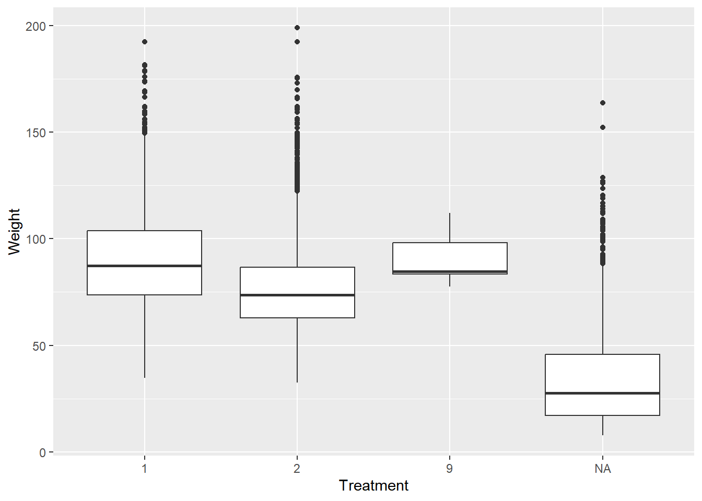
Children weren’t given the treatment - that’s why we see an NA age category. We also have some patients have weights missing, thus the warning that the boxplot throws.
18.3.1.3 Data Cleaning
During data cleaning, we discovered that no one under the age of 16 was given the treatment. Let’s only keep patients who are greater than 16 years old in the dataset.
# Filter to keep only those 16+ years old
nhanes_filter <- nhanes_combined %>% filter(ridageyr > 16)One option for dealing with the missing weights, imputation, can be implemented using the simputation package. Imputation is a technique for dealing with missing values where you replace them either with a summary statistic, like mean or median, or use a model to predict a value to use.
We’ll use impute_median(), which takes a dataset and the variable to impute or formula to impute by as arguments.
# Load simputation & impute bmxwt by riagendr
library(simputation)
nhanes_final <- simputation::impute_median(nhanes_filter, bmxwt ~ riagendr)Recode the nhanes_final$mcq365d variable by setting any observations with a value of 9 to 2 instead. Verify the recoding worked with count().
# Recode mcq365d with recode() & examine with count()
nhanes_final$mcq365d <- recode(nhanes_final$mcq365d,
`1` = 1,
`2` = 2,
`9` = 2)
nhanes_final %>% count(mcq365d)## # A tibble: 2 × 2
## mcq365d n
## <dbl> <int>
## 1 1 1802
## 2 2 408518.3.1.4 Resampling
The NHANES data is collected on sampled units (people) specifically selected to represent the U.S. population. However, let’s resample the nhanes_final dataset in different ways so we get a feel for the different sampling methods.
# Use slice_sample() to create nhanes_srs
nhanes_srs <- nhanes_final %>% slice_sample(n = 2500)Stratify by riagendr and select 2000 of each gender. Confirm that it worked by using count() to examine nhanes_stratified’s gender variable.
# Create nhanes_stratified with group_by() and slice_sample()
nhanes_stratified <- nhanes_final %>%
group_by(riagendr) %>%
slice_sample(n = 2000)
nhanes_stratified %>% count(riagendr)## # A tibble: 2 × 2
## # Groups: riagendr [2]
## riagendr n
## <dbl> <int>
## 1 1 2000
## 2 2 2000Use cluster() to divide nhanes_final by "indhhin2" into 6 clusters using the "srswor" method.
# Load sampling package and create nhanes_cluster with cluster()
library(sampling)
nhanes_cluster <- cluster(nhanes_final, "indhhin2", 6, method = "srswor")18.3.2 Randomized Complete Block Designs (RCBD)
RCBDs
Randomized: the treatment is assigned randomly inside each block
Complete: each treatment is used the same number of times in every block
Block: experimental groups are blocked to be similar (e.g. by sex)
The purpose of blocking an experiment is to make the experimental groups more like one another. Groups are blocked by a variable that is known to introduce variability that will affect the outcome of the experiment but is not of interest to study in the experiment itself.
A rule of thumb in experimental design is often “block what you can, randomize what you cannot”, which means you should aim to block the effects you can control for (e.g. sex) and randomize on those you cannot (e.g. smoking status). Variability inside a block is expected to be fairly small, but variability between blocks will be larger.
18.3.2.1 Drawing RCBDs with Agricolae
agricolae package enables you to “draw” some of the different experimental designs.
library(agricolae)
# Create designs using ls()
# see all possible designs that agricolae can draw
designs <- ls("package:agricolae", pattern = "design")
designs## [1] "design.ab" "design.alpha" "design.bib" "design.crd"
## [5] "design.cyclic" "design.dau" "design.graeco" "design.lattice"
## [9] "design.lsd" "design.mat" "design.rcbd" "design.split"
## [13] "design.strip" "design.youden"Let’s draw an RCBD design with 5 treatments and 4 blocks, which go in the r argument.
# Use str() to view design.rcbd's criteria
str(design.rcbd)## function (trt, r, serie = 2, seed = 0, kinds = "Super-Duper", first = TRUE,
## continue = FALSE, randomization = TRUE)# Build treats and rep
treats <- LETTERS[1:5]
blocks <- 4 # row
# Build my_design_rcbd and view the sketch
my_design_rcbd <- design.rcbd(treats, r = blocks, seed = 42)
my_design_rcbd$sketch## [,1] [,2] [,3] [,4] [,5]
## [1,] "D" "A" "C" "B" "E"
## [2,] "E" "A" "C" "D" "B"
## [3,] "D" "B" "E" "A" "C"
## [4,] "B" "D" "E" "C" "A"18.3.2.2 NHANES RCBD
Recall that our blocked experiment involved a treatment wherein the doctor asks the patient to reduce their fat or calories in their diet, and we’re testing the effect this has on weight (bmxwt).
Blocking this experiment by gender means that if we observe an effect of the treatment on bmxwt, it’s more likely that the effect was actually due to the treatment versus the individual’s gender.
In your R code, you denote a blocked experiment by using a formula that looks like: outcome ~ treatment + blocking_factor
# Use aov() to create nhanes_rcbd
nhanes_rcbd <- aov(bmxwt ~ mcq365d + riagendr, nhanes_final)
# Check results of nhanes_rcbd with summary()
summary(nhanes_rcbd)## Df Sum Sq Mean Sq F value Pr(>F)
## mcq365d 1 229164 229164 571 <0.0000000000000002 ***
## riagendr 1 163069 163069 406 <0.0000000000000002 ***
## Residuals 5884 2360774 401
## ---
## Signif. codes: 0 '***' 0.001 '**' 0.01 '*' 0.05 '.' 0.1 ' ' 1# Print mean weights by mcq365d and riagendr
nhanes_final %>%
group_by(mcq365d, riagendr) %>%
summarize(mean_wt = mean(bmxwt))## `summarise()` has grouped output by
## 'mcq365d'. You can override using the
## `.groups` argument.## # A tibble: 4 × 3
## # Groups: mcq365d [2]
## mcq365d riagendr mean_wt
## <dbl> <dbl> <dbl>
## 1 1 1 95.2
## 2 1 2 86.6
## 3 2 1 82.7
## 4 2 2 71.3There truly is a mean difference in weight by gender, so blocking was a good call for this experiment. We also observed a statistically significant effect of the treatment on bmxwt.
18.3.2.3 RCBD Model Validation
We can also look at Interaction plots. We hope to see parallel lines, no matter which of the block or the treatment is on the x-axis. If they are, they satisfy a key assumption of the RCBD model called Additivity.
The initial diganostic plots show that this model is pretty good but not great - especially at the larger end of the data, the Q-Q plot shows the data might not be normal.
# Set up the 2x2 plotting grid and plot nhanes_rcbd
par(mfrow = c(2, 2))
plot(nhanes_rcbd)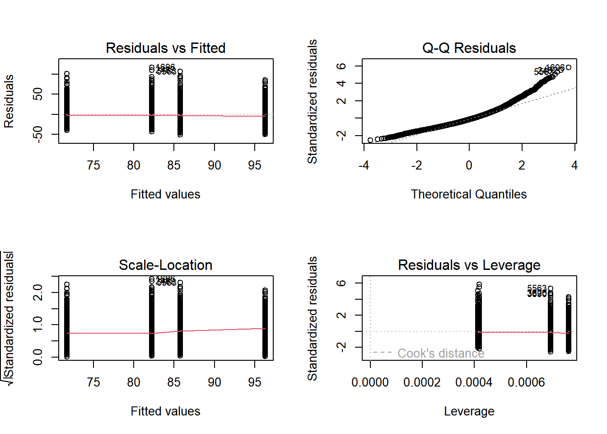
Interaction plot: with(dataset, interaction.plot(x.factor, trace.factor, response))
# Run the code to view the interaction plots
with(nhanes_final, interaction.plot(mcq365d, riagendr, bmxwt))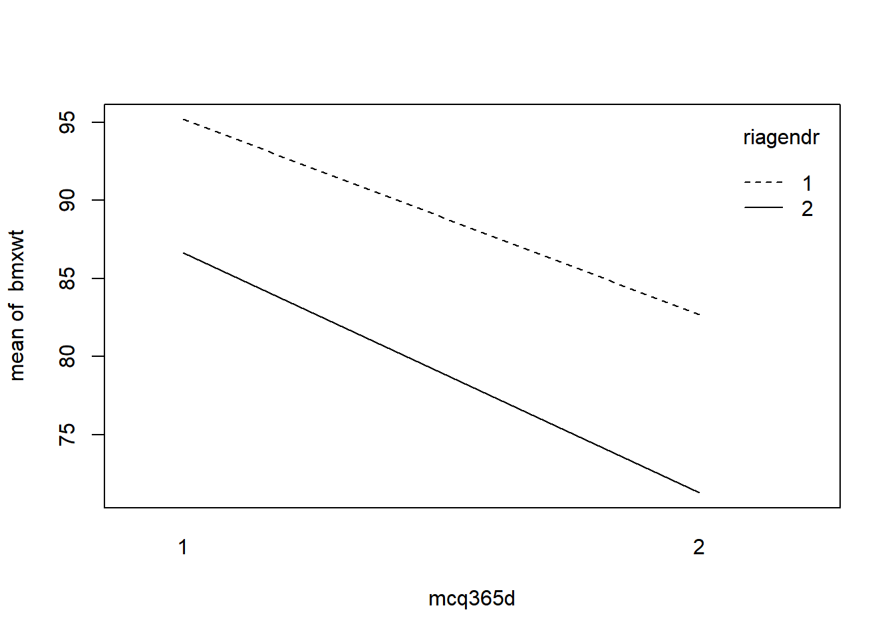
# Run the code to view the interaction plots
with(nhanes_final, interaction.plot(riagendr, mcq365d, bmxwt))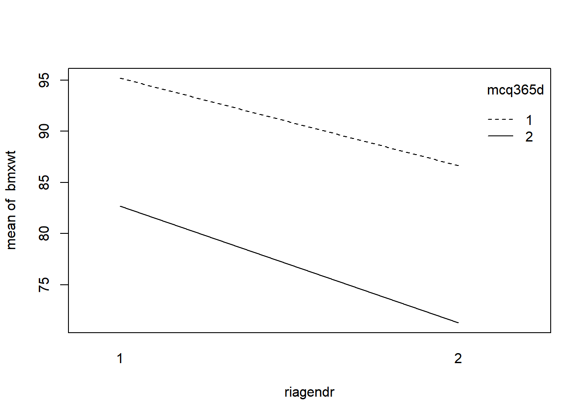
The interaction plots show nearly parallel lines.
18.3.3 Balanced Incomplete Block Designs (BIBD)
Balanced Incomplete Block Designs
Balanced: each pair of treatments occur together in a block an equal number of times
Incomplete: not every treatment will appear in every block
Block: experimental groups are blocked to be similar (e.g. by sex)
Is there a BIBD?
t = # of treatments k = # of treatments per block r = # replications
\(λ = r × \frac{(k - 1)}{t - 1}\)
If λ is whole number, there is a BIBD. (整除才有辦法設計BIBD)
# It takes as input t = number of treatments, k = number of treatments per block, and r = number of repetitions.
lambda <- function(t, k, r){
return((r*(k-1)) / (t-1))
}
# there is BIBD
lambda(2,3,4)## [1] 8# no BIBD
lambda(3,4,11)## [1] 16.518.3.3.1 Drawing BIBDs with agricolae
We can also use agricolae to draw BIBDs. design.bib() takes, at minimum, the treatments (treats), an integer k corresponding to the number of levels of the blocks, and a seed as inputs.
The main thing you should notice about a BIBD is that not every treatment will be used in each block (column) of the output.
design.bib() will return an error message letting you know if a design is not valid.
# using A, B, and C for the treatments, 4 blocks
# Create my_design_bibd_1
my_design_bibd_1 <- design.bib(LETTERS[1:3], k = 4, seed = 42)Error in AlgDesign::optBlock(~., withinData = factor(1:v), blocksizes = rep(k, :
The number of trials must be at least as large as the minimum blocksize.# using LETTERS[1:8] for treatments, 3 blocks
# Create my_design_bibd_2
my_design_bibd_2 <- design.bib(LETTERS[1:8], k = 3, seed = 42)Error in rep(k, b) : invalid 'times' argument# using A, B, C, and D as treatments, 4 blocks, and the same seed. Examine the sketch of the object.
# Create my_design_bibd_3
my_design_bibd_3 <- design.bib(LETTERS[1:4], k = 4, seed = 42)##
## Parameters BIB
## ==============
## Lambda : 2
## treatmeans : 4
## Block size : 4
## Blocks : 2
## Replication: 2
##
## Efficiency factor 1
##
## <<< Book >>>my_design_bibd_3$sketch## [,1] [,2] [,3] [,4]
## [1,] "C" "A" "D" "B"
## [2,] "C" "D" "B" "A"The blocks are now the columns.
18.3.3.2 BIBD - cat’s kidney function
Say we want to test the difference between four different wet foods in cats’ diets on their kidney function.
Cat food, however, is expensive, so we’ll only test 3 foods per block to save some money.
The blocking factor is the color of cat, as we aren’t interested in that as part of our experiment.
The outcome will be measured blood creatinine level.
# make sure a BIBD is possible
# Calculate lambda
lambda(t = 4, k = 3, r = 3)## [1] 2You can see the order in which the food treatments are used in each block.
# Build the data.frame
creatinine <- c(1.98, 1.97, 2.35, 2.09, 1.87, 1.95, 2.08, 2.01, 1.84, 2.06, 1.97, 2.22)
food <- as.factor(c("A", "C", "D", "A", "B", "C", "B", "C", "D", "A", "B", "D"))
color <- as.factor(rep(c("Black", "White", "Orange", "Spotted"), each = 3))
cat_experiment <- as.data.frame(cbind(creatinine, food, color))
cat_experiment## creatinine food color
## 1 1.98 1 1
## 2 1.97 3 1
## 3 2.35 4 1
## 4 2.09 1 4
## 5 1.87 2 4
## 6 1.95 3 4
## 7 2.08 2 2
## 8 2.01 3 2
## 9 1.84 4 2
## 10 2.06 1 3
## 11 1.97 2 3
## 12 2.22 4 3Does type of wet food make a difference on creatinine levels?
# Create cat_model and examine with summary()
cat_model <- aov(creatinine ~ food + color, data = cat_experiment)
summary(cat_model)## Df Sum Sq Mean Sq F value Pr(>F)
## food 1 0.012 0.01204 0.53 0.49
## color 1 0.007 0.00697 0.31 0.59
## Residuals 9 0.205 0.02273It seems there are no differences by type of wet food in kidney function.
18.3.3.3 NHANES BIBD
Let’s jump back into the NHANES data and pretend we have access to NHANES patients ages 18-45.
Blocking: by race, stored in NHANES as ridreth1.
Groups, weightlift_treat:
either no particular upper body weightlifting regimen,
a weightlifting regimen,
a weightlifting regimen plus a prescribed daily vitamin supplement.
Outcome: arm circumference, bmxarmc.
Those funding the study decide they want it to be a BIBD where only 2 treatments appear in each block.
# Does a BIBD exist?
# Calculate lambda
lambda(3, 2, 2)## [1] 1nhanes_final <- read_delim("data/nhanes_final_add_weightlift_treat.txt", delim = ",")## Warning: One or more parsing issues, call `problems()`
## on your data frame for details, e.g.:
## dat <- vroom(...)
## problems(dat)## Rows: 2452 Columns: 162
## ── Column specification ──────────────────────
## Delimiter: ","
## dbl (129): seqn, sddsrvyr, ridstatr, riagendr, ridageyr, ridreth1, ridreth3,...
## lgl (33): ridagemn, mcq149, mcq151, mcq230b, mcq230c, mcq230d, mcq240a, mcq...
##
## ℹ Use `spec()` to retrieve the full column specification for this data.
## ℹ Specify the column types or set `show_col_types = FALSE` to quiet this message.# Create weightlift_model & examine results
weightlift_model <- aov(bmxarmc ~ weightlift_treat + ridreth1, nhanes_final)
summary(weightlift_model)## Df Sum Sq Mean Sq F value Pr(>F)
## weightlift_treat 1 4 4 0.13 0.72
## ridreth1 1 529 529 17.13 0.000036 ***
## Residuals 2334 72059 31
## ---
## Signif. codes: 0 '***' 0.001 '**' 0.01 '*' 0.05 '.' 0.1 ' ' 1
## 115 observations deleted due to missingnessThe weight lifting regimen doesn’t seem to have a significant effect on arm circumference when the patient population is blocked by race.
18.4 Squares & Factorial Experiments
18.4.1 Latin squares
Two blocking factors
All factors must have the same number of levels
Key assumption: the treatment and two blocking factors do not interact
18.4.1.1 NYC SAT Scores EDA
nyc_scores dataset includes:
All accredited NYC high schools
SAT scores (Reading, Writing, and Math)
2014-2015 school year
we’ll do experiments where we block by Borough and Teacher_Education_Level, so let’s examine math scores by those variables.
nyc_scores <- read_delim("data/nyc_scores_Teacher_Education.txt", delim = ",")
glimpse(nyc_scores)## Rows: 435
## Columns: 23
## $ School_ID <chr> "02M260", "06M211", "01M539", "02M294", "02M…
## $ School_Name <chr> "Clinton School Writers and Artists", "Inwoo…
## $ Borough <chr> "Manhattan", "Manhattan", "Manhattan", "Manh…
## $ Building_Code <chr> "M933", "M052", "M022", "M445", "M445", "M44…
## $ Street_Address <chr> "425 West 33rd Street", "650 Academy Street"…
## $ City <chr> "Manhattan", "Manhattan", "Manhattan", "Manh…
## $ State <chr> "NY", "NY", "NY", "NY", "NY", "NY", "NY", "N…
## $ Zip_Code <dbl> 10001, 10002, 10002, 10002, 10002, 10002, 10…
## $ Latitude <dbl> 40.8, 40.9, 40.7, 40.7, 40.7, 40.7, 40.7, 40…
## $ Longitude <dbl> -74.0, -73.9, -74.0, -74.0, -74.0, -74.0, -7…
## $ Phone_Number <chr> "212-695-9114", "718-935-3660 ", "212-677-5…
## $ Start_Time <time> NA, 08:30:00, 08:15:00, 08:00:00, 08:…
## $ End_Time <time> NA, 15:00:00, 16:00:00, 14:45:00, 15:…
## $ Student_Enrollment <dbl> NA, 87, 1735, 358, 383, 416, 255, 545, 329, …
## $ Percent_White <dbl> NA, 0.03, 0.29, 0.12, 0.03, 0.02, 0.04, 0.45…
## $ Percent_Black <dbl> NA, 0.22, 0.13, 0.39, 0.28, 0.03, 0.24, 0.17…
## $ Percent_Hispanic <dbl> NA, 0.68, 0.18, 0.41, 0.57, 0.06, 0.57, 0.19…
## $ Percent_Asian <dbl> NA, 0.05, 0.39, 0.06, 0.09, 0.89, 0.13, 0.17…
## $ Average_Score_SAT_Math <dbl> NA, NA, 657, 395, 418, 613, 410, 634, 389, 4…
## $ Average_Score_SAT_Reading <dbl> NA, NA, 601, 411, 428, 453, 406, 641, 395, 4…
## $ Average_Score_SAT_Writing <dbl> NA, NA, 601, 387, 415, 463, 381, 639, 381, 3…
## $ Percent_Tested <dbl> NA, NA, 0.91, 0.79, 0.65, 0.96, 0.60, 0.71, …
## $ Teacher_Education_Level <chr> "BA", "BA", "MA", "BA", "Grad Student", "MA"…# Mean, var, and median of Math score
nyc_scores %>%
group_by(Borough) %>%
summarise(mean = mean(Average_Score_SAT_Math, na.rm = TRUE),
var = var(Average_Score_SAT_Math, na.rm = TRUE),
median = median(Average_Score_SAT_Math, na.rm = TRUE))## # A tibble: 5 × 4
## Borough mean var median
## <chr> <dbl> <dbl> <dbl>
## 1 Bronx 404. 2726. 396.
## 2 Brooklyn 416. 3658. 395
## 3 Manhattan 456. 7026. 433
## 4 Queens 462. 5168. 448
## 5 Staten Island 486. 6911. 466.# Mean, var, and median of Math score by Teacher Education Level
nyc_scores %>%
group_by(Teacher_Education_Level) %>%
summarise(mean = mean(Average_Score_SAT_Math, na.rm = TRUE),
var = var(Average_Score_SAT_Math, na.rm = TRUE),
median = median(Average_Score_SAT_Math, na.rm = TRUE))## # A tibble: 5 × 4
## Teacher_Education_Level mean var median
## <chr> <dbl> <dbl> <dbl>
## 1 BA 425. 4061. 410.
## 2 College Student 430. 5361. 403
## 3 Grad Student 428. 3567. 415
## 4 MA 440. 6476. 418
## 5 PhD 449. 6648. 418# Mean, var, and median of Math score by both
nyc_scores %>%
group_by(Borough, Teacher_Education_Level) %>%
summarise(mean = mean(Average_Score_SAT_Math, na.rm = TRUE),
var = var(Average_Score_SAT_Math, na.rm = TRUE),
median = median(Average_Score_SAT_Math, na.rm = TRUE))## `summarise()` has grouped output by
## 'Borough'. You can override using the
## `.groups` argument.## # A tibble: 25 × 5
## # Groups: Borough [5]
## Borough Teacher_Education_Level mean var median
## <chr> <chr> <dbl> <dbl> <dbl>
## 1 Bronx BA 413. 1742. 407
## 2 Bronx College Student 400. 4984. 390
## 3 Bronx Grad Student 390. 684. 388.
## 4 Bronx MA 411. 3591. 400
## 5 Bronx PhD 398. 297. 398
## 6 Brooklyn BA 406. 3589. 394.
## 7 Brooklyn College Student 430. 5370. 398.
## 8 Brooklyn Grad Student 422. 2754. 391
## 9 Brooklyn MA 402. 2470. 394.
## 10 Brooklyn PhD 439. 3365. 450.
## # ℹ 15 more rows18.4.1.2 Dealing with Missing
If we want to use SAT scores as our outcome, we should examine missingness. Examine the pattern of missingness across all the variables in nyc_scores using miss_var_summary() from the naniar package.
# Load naniar
library(naniar)## Warning: package 'naniar' was built under R version 4.3.2##
## Attaching package: 'naniar'## The following object is masked from 'package:simputation':
##
## impute_median## The following object is masked from 'package:assertive.base':
##
## is_na# Examine missingness with miss_var_summary()
nyc_scores %>% miss_var_summary()## # A tibble: 23 × 3
## variable n_miss pct_miss
## <chr> <int> <dbl>
## 1 Average_Score_SAT_Math 60 13.8
## 2 Average_Score_SAT_Reading 60 13.8
## 3 Average_Score_SAT_Writing 60 13.8
## 4 Percent_Tested 49 11.3
## 5 Student_Enrollment 7 1.61
## 6 Percent_White 7 1.61
## 7 Percent_Black 7 1.61
## 8 Percent_Hispanic 7 1.61
## 9 Percent_Asian 7 1.61
## 10 Start_Time 4 0.920
## # ℹ 13 more rowsThere are 60 missing scores in each subject.
# Impute the Math score by Borough
nyc_scores_2 <- nyc_scores %>%
simputation::impute_median(Average_Score_SAT_Math ~ Borough)
# note that impute_median() returns the imputed variable as type "impute".
# Convert Math score to numeric
nyc_scores_2$Average_Score_SAT_Math <- as.numeric(nyc_scores_2$Average_Score_SAT_Math)# Examine scores by Borough in both datasets, before and after imputation
nyc_scores %>%
group_by(Borough) %>%
summarize(median = median(Average_Score_SAT_Math, na.rm = TRUE),
mean = mean(Average_Score_SAT_Math, na.rm = TRUE))## # A tibble: 5 × 3
## Borough median mean
## <chr> <dbl> <dbl>
## 1 Bronx 396. 404.
## 2 Brooklyn 395 416.
## 3 Manhattan 433 456.
## 4 Queens 448 462.
## 5 Staten Island 466. 486.nyc_scores_2 %>%
group_by(Borough) %>%
summarize(median = median(Average_Score_SAT_Math, na.rm = TRUE),
mean = mean(Average_Score_SAT_Math, na.rm = TRUE))## # A tibble: 5 × 3
## Borough median mean
## <chr> <dbl> <dbl>
## 1 Bronx 396. 403.
## 2 Brooklyn 395 414.
## 3 Manhattan 433 452.
## 4 Queens 448 460.
## 5 Staten Island 466. 486.18.4.1.3 Drawing Latin Squares
Since a Latin Square experiment has two blocking factors, you can see that in this design, each treatment appears once in both each row (blocking factor 1) and each column (blocking factor 2).
[,1] [,2] [,3] [,4]
[1,] "B" "D" "A" "C"
[2,] "A" "C" "D" "B"
[3,] "D" "B" "C" "A"
[4,] "C" "A" "B" "D"Create and view the sketch of a Latin Square design, using treatments A, B, C, D, & E, and a seed of 42.
# Design a LS with 5 treatments A:E then look at the sketch
my_design_lsd <- design.lsd(trt = LETTERS[1:5], seed = 42)
my_design_lsd$sketch## [,1] [,2] [,3] [,4] [,5]
## [1,] "E" "D" "A" "C" "B"
## [2,] "D" "C" "E" "B" "A"
## [3,] "A" "E" "B" "D" "C"
## [4,] "C" "B" "D" "A" "E"
## [5,] "B" "A" "C" "E" "D"18.4.1.4 Latin Square with NYC SAT Scores
To execute a Latin Square design on this data, suppose we want to know the effect of our tutoring program, which includes one-on-one tutoring, two small groups, and an in and after-school SAT prep class.
A new dataset nyc_scores_ls is available that represents this experiment.
nyc_scores_ls <- read_delim("data/nyc_scores_ls.txt", delim = ",")
glimpse(nyc_scores_ls)## Rows: 25
## Columns: 24
## $ School_ID <chr> "12X682", "09X505", "12X251", "08X519", "11X…
## $ School_Name <chr> "Fannie Lou Hamer Freedom High School", "Bro…
## $ Borough <chr> "Bronx", "Bronx", "Bronx", "Bronx", "Bronx",…
## $ Building_Code <chr> "X878", "X460", "X098", "X972", "X415", "K26…
## $ Street_Address <chr> "1021 Jennings Street", "244 East 163rd Stre…
## $ City <chr> "Bronx", "Bronx", "Bronx", "Bronx", "Bronx",…
## $ State <chr> "NY", "NY", "NY", "NY", "NY", "NY", "NY", "N…
## $ Zip_Code <dbl> 10460, 10451, 10460, 10473, 10469, 11205, 11…
## $ Latitude <dbl> 40.8, 40.8, 40.8, 40.8, 40.9, 40.7, 40.7, 40…
## $ Longitude <dbl> -73.9, -73.9, -73.9, -73.9, -73.9, -74.0, -7…
## $ Phone_Number <chr> "718-861-0521", "718-410-3430", "718-893-617…
## $ Start_Time <time> 08:45:00, 08:15:00, 08:00:00, 08:00:00, 08:…
## $ End_Time <time> 14:45:00, 15:00:00, 15:30:00, 14:19:00, 15:…
## $ Student_Enrollment <dbl> 470, 778, 358, 307, 427, 421, 174, 496, 245,…
## $ Percent_White <dbl> 0.00, 0.01, 0.02, 0.03, 0.09, 0.01, 0.28, 0.…
## $ Percent_Black <dbl> 0.29, 0.23, 0.27, 0.25, 0.29, 0.73, 0.48, 0.…
## $ Percent_Hispanic <dbl> 0.70, 0.72, 0.70, 0.68, 0.57, 0.23, 0.06, 0.…
## $ Percent_Asian <dbl> 0.00, 0.02, 0.01, 0.02, 0.03, 0.01, 0.16, 0.…
## $ Average_Score_SAT_Math <dbl> 345, 403, 377, 389, 418, 332, 395, 428, 344,…
## $ Average_Score_SAT_Reading <dbl> 347, 409, 372, 408, 432, 346, NA, 413, 380, …
## $ Average_Score_SAT_Writing <dbl> 339, 415, 365, 413, 436, 350, NA, 417, 379, …
## $ Percent_Tested <dbl> 0.75, 0.64, 0.43, 0.31, 0.73, 0.55, NA, 0.84…
## $ Teacher_Education_Level <chr> "College Student", "BA", "Grad Student", "MA…
## $ Tutoring_Program <chr> "One-on-One", "Small Groups (2-3)", "Small G…We’ll block by Borough and Teacher_Education_Level to reduce their known variance on the score outcome.
# Build nyc_scores_ls_lm
nyc_scores_ls_lm <- lm(Average_Score_SAT_Math ~ Tutoring_Program + Borough + Teacher_Education_Level,
data = nyc_scores_ls)
# Tidy the results with broom
tidy(nyc_scores_ls_lm)## # A tibble: 13 × 5
## term estimate std.error statistic p.value
## <chr> <dbl> <dbl> <dbl> <dbl>
## 1 (Intercept) 373. 35.5 10.5 2.07e-7
## 2 Tutoring_ProgramSAT Prep Class (after s… 16.2 31.1 0.520 6.12e-1
## 3 Tutoring_ProgramSAT Prep Class (school … 6.8 31.1 0.218 8.31e-1
## 4 Tutoring_ProgramSmall Groups (2-3) 12.4 31.1 0.398 6.97e-1
## 5 Tutoring_ProgramSmall Groups (4-6) 15.6 31.1 0.501 6.25e-1
## 6 BoroughBrooklyn -5.00 31.1 -0.161 8.75e-1
## 7 BoroughManhattan 19.8 31.1 0.636 5.37e-1
## 8 BoroughQueens 88.6 31.1 2.85 1.47e-2
## 9 BoroughStaten Island 64.6 31.1 2.08 6.01e-2
## 10 Teacher_Education_LevelCollege Student -18.8 31.1 -0.604 5.57e-1
## 11 Teacher_Education_LevelGrad Student 10.8 31.1 0.347 7.35e-1
## 12 Teacher_Education_LevelMA 12.6 31.1 0.405 6.93e-1
## 13 Teacher_Education_LevelPhD 10.4 31.1 0.334 7.44e-1# Examine the results with anova
anova(nyc_scores_ls_lm)## Analysis of Variance Table
##
## Response: Average_Score_SAT_Math
## Df Sum Sq Mean Sq F value Pr(>F)
## Tutoring_Program 4 928 232 0.10 0.982
## Borough 4 33977 8494 3.51 0.041 *
## Teacher_Education_Level 4 3460 865 0.36 0.834
## Residuals 12 29063 2422
## ---
## Signif. codes: 0 '***' 0.001 '**' 0.01 '*' 0.05 '.' 0.1 ' ' 1It seems that when we block for Borough of the school and Teacher_Education_Level, our Tutoring_Program isn’t having a statistically significant effect on the Math SAT score.
18.4.2 Graeco-Latin squares
Graeco-Latin squares
Three blocking factors
All factors must have the same number of levels
Key assumption: the treatment and three blocking factors do not interact
18.4.2.1 NYC SAT Scores Data Viz
Create and examine the requested boxplot. How do the medians differ by Borough? How many outliers are present, and where are they mostly present?
# Create a boxplot of Math scores by Borough, with a title and x/y axis labels
ggplot(nyc_scores, aes(x = Borough, y = Average_Score_SAT_Math)) +
geom_boxplot() +
labs(title = "Average SAT Math Scores by Borough, NYC",
xlab = "Borough (NYC)",
ylab = "Average SAT Math Scores (2014-15)")## Warning: Removed 60 rows containing non-finite values
## (`stat_boxplot()`).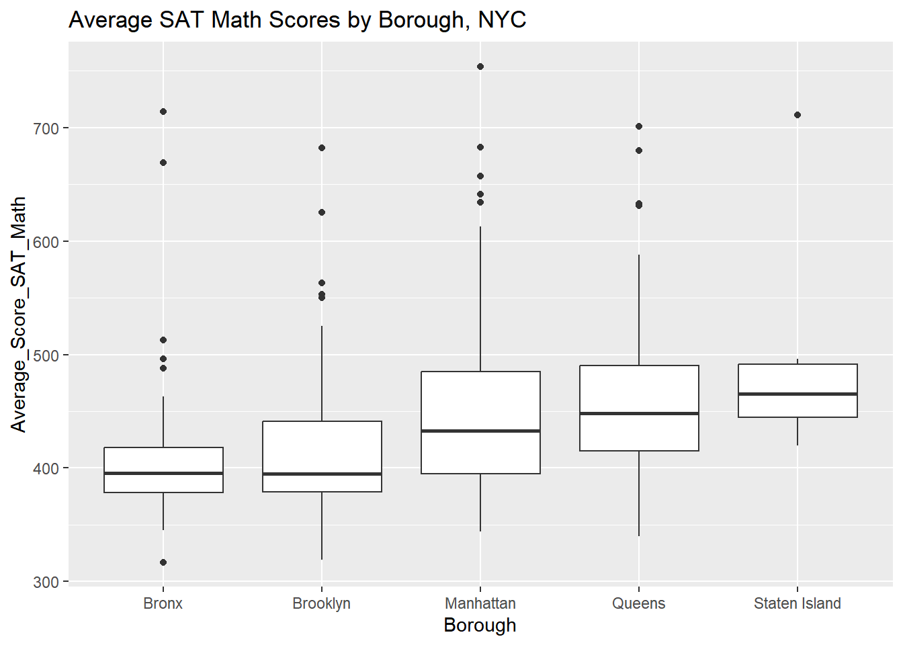
18.4.2.2 Drawing Graeco-Latin Squares
One difference in the input to design.graeco() that we haven’t seen before is that we’ll need to input 2 vectors, trt1 and trt2, which must be of equal length.
You can think of trt1 as your actual treatment; trt2 as one of your blocking factors.
# Create trt1 and trt2
trt1 <- LETTERS[1:5]
trt2 <- 1:5
# Create my_graeco_design
my_graeco_design <- design.graeco(trt1, trt2, seed = 42)
# Examine the parameters and sketch
my_graeco_design$sketch## [,1] [,2] [,3] [,4] [,5]
## [1,] "D 5" "A 1" "C 3" "B 4" "E 2"
## [2,] "A 3" "C 4" "B 2" "E 5" "D 1"
## [3,] "C 2" "B 5" "E 1" "D 3" "A 4"
## [4,] "B 1" "E 3" "D 4" "A 2" "C 5"
## [5,] "E 4" "D 2" "A 5" "C 1" "B 3"my_graeco_design$parameters## $design
## [1] "graeco"
##
## $trt1
## [1] "A" "B" "C" "D" "E"
##
## $trt2
## [1] 1 2 3 4 5
##
## $r
## [1] 5
##
## $serie
## [1] 2
##
## $seed
## [1] 42
##
## $kinds
## [1] "Super-Duper"
##
## [[8]]
## [1] TRUEYou can see that this time the sketch object includes your treatment (the capital letter) and a blocking factor (the number.)
18.4.2.3 Graeco-Latin Square with NYC SAT Scores
Recall that our Latin Square exercise in this chapter tested the effect of our tutoring program, blocked by Borough and Teacher_Education_Level.
For our Graeco-Latin Square, say we also want to block out the known effect of Homework_Type, which indicates what kind of homework the student was given: individual only, small or large group homework, or some combination.
We can add this as another blocking factor to create a Graeco-Latin Square experiment.
nyc_scores_gls <- read_delim("data/nyc_scores_gls.txt", delim = ",")
glimpse(nyc_scores_gls)## Rows: 25
## Columns: 25
## $ School_ID <chr> "11X290", "12X692", "07X334", "08X561", "10X…
## $ School_Name <chr> "Bronx Academy of Health Careers", "Monroe A…
## $ Borough <chr> "Bronx", "Bronx", "Bronx", "Bronx", "Bronx",…
## $ Building_Code <chr> "X425", "X420", "X139", "X450", "X430", "K42…
## $ Street_Address <chr> "800 East Gun Hill Road", "1300 Boynton Aven…
## $ City <chr> "Bronx", "Bronx", "Bronx", "Bronx", "Bronx",…
## $ State <chr> "NY", "NY", "NY", "NY", "NY", "NY", "NY", "N…
## $ Zip_Code <dbl> 10467, 10472, 10454, 10473, 10468, 11208, 11…
## $ Latitude <dbl> 40.9, 40.8, 40.8, 40.8, 40.9, 40.7, 40.7, 40…
## $ Longitude <dbl> -73.9, -73.9, -73.9, -73.9, -73.9, -73.9, -7…
## $ Phone_Number <chr> "718-696-3340", "718-860-8160", "718-665-412…
## $ Start_Time <time> 08:25:00, 08:30:00, 09:00:00, 08:30:00, 08:…
## $ End_Time <time> 15:15:00, 15:00:00, 16:00:00, 15:15:00, 15:…
## $ Student_Enrollment <dbl> 465, 445, 463, 332, 530, 413, 284, 648, 514,…
## $ Percent_White <dbl> 0.02, 0.01, 0.01, 0.01, 0.02, 0.01, 0.01, 0.…
## $ Percent_Black <dbl> 0.45, 0.18, 0.14, 0.35, 0.17, 0.46, 0.76, 0.…
## $ Percent_Hispanic <dbl> 0.47, 0.78, 0.77, 0.60, 0.77, 0.46, 0.19, 0.…
## $ Percent_Asian <dbl> 0.05, 0.01, 0.07, 0.02, 0.03, 0.05, 0.03, 0.…
## $ Average_Score_SAT_Math <dbl> 386, 361, 345, 396, 432, 395, 380, 399, 389,…
## $ Average_Score_SAT_Reading <dbl> 380, 354, 338, NA, 396, 376, 389, 392, 374, …
## $ Average_Score_SAT_Writing <dbl> 391, 351, 312, NA, 395, 359, 384, 394, 378, …
## $ Percent_Tested <dbl> 0.59, 0.47, 0.58, NA, 0.40, 0.57, 0.41, 0.36…
## $ Teacher_Education_Level <chr> "College Student", "BA", "Grad Student", "MA…
## $ Tutoring_Program <chr> "SAT Prep Class (school hours)", "SAT Prep C…
## $ Homework_Type <chr> "Small Group", "Large Group", "Individual", …# Build nyc_scores_gls_lm
nyc_scores_gls_lm <- lm(Average_Score_SAT_Math ~ Tutoring_Program + Borough + Teacher_Education_Level + Homework_Type,
data = nyc_scores_gls)
# Tidy the results with broom
tidy(nyc_scores_gls_lm)## # A tibble: 17 × 5
## term estimate std.error statistic p.value
## <chr> <dbl> <dbl> <dbl> <dbl>
## 1 (Intercept) 351. 44.9 7.81 5.19e-5
## 2 Tutoring_ProgramSAT Prep Class (after s… 42.0 34.5 1.22 2.58e-1
## 3 Tutoring_ProgramSAT Prep Class (school … 45.8 34.5 1.33 2.20e-1
## 4 Tutoring_ProgramSmall Groups (2-3) 62.4 34.5 1.81 1.08e-1
## 5 Tutoring_ProgramSmall Groups (4-6) 51.1 34.5 1.48 1.76e-1
## 6 BoroughBrooklyn 2.70 34.5 0.0783 9.39e-1
## 7 BoroughManhattan 110. 34.5 3.19 1.28e-2
## 8 BoroughQueens 56.9 34.5 1.65 1.37e-1
## 9 BoroughStaten Island 88.3 34.5 2.56 3.35e-2
## 10 Teacher_Education_LevelCollege Student -35.4 34.5 -1.03 3.34e-1
## 11 Teacher_Education_LevelGrad Student 8.60 34.5 0.250 8.09e-1
## 12 Teacher_Education_LevelMA 19.1 34.5 0.554 5.95e-1
## 13 Teacher_Education_LevelPhD -3.00 34.5 -0.0871 9.33e-1
## 14 Homework_TypeLarge Group -2.00 34.5 -0.0580 9.55e-1
## 15 Homework_TypeMix of Large Group/Individ… -23.5 34.5 -0.682 5.15e-1
## 16 Homework_TypeMix of Small Group/Individ… -9.80 34.5 -0.284 7.83e-1
## 17 Homework_TypeSmall Group 9.60 34.5 0.279 7.88e-1# Examine the results with anova
anova(nyc_scores_gls_lm)## Analysis of Variance Table
##
## Response: Average_Score_SAT_Math
## Df Sum Sq Mean Sq F value Pr(>F)
## Tutoring_Program 4 11311 2828 0.95 0.482
## Borough 4 49138 12285 4.14 0.042 *
## Teacher_Education_Level 4 8390 2098 0.71 0.610
## Homework_Type 4 3062 765 0.26 0.897
## Residuals 8 23753 2969
## ---
## Signif. codes: 0 '***' 0.001 '**' 0.01 '*' 0.05 '.' 0.1 ' ' 1When blocked out by all the other factors, our Tutoring program has no effect on the Math score.
18.4.3 Factorial experiments
Factorial designs
2 or more factor variables are combined and crossed.
All of the possible interactions between levels of factors are considered as effects on the outcome.
2^k factorial experiments
2^k factorial experiments involve k factor variables with 2 levels
It results in 2^k number of combinations of effects to test
Analyzed with a linear model and ANOVA
Also use
TukeyHSD()to determine which combinations are significantly different
18.4.3.1 Factorial EDA
Let’s test the effect of Percent_Black_HL, Percent_Tested_HL, and Tutoring_Program on the outcome, Average_Score_SAT_Math.
The HL stands for high-low, where a 1 indicates respectively that less than 50% of Black students or that less than 50% of all students in an entire school were tested, and a 2 indicates that greater than 50% of either were tested.
nyc_scores <- read_delim("data/nyc_scores_factorial.txt", delim = ",")
nyc_scores$Percent_Tested_HL <- as.factor(nyc_scores$Percent_Tested_HL)
nyc_scores$Percent_Black_HL <- as.factor(nyc_scores$Percent_Black_HL)
glimpse(nyc_scores)## Rows: 435
## Columns: 25
## $ School_ID <chr> "02M260", "06M211", "01M539", "02M294", "02M…
## $ School_Name <chr> "Clinton School Writers and Artists", "Inwoo…
## $ Borough <chr> "Manhattan", "Manhattan", "Manhattan", "Manh…
## $ Building_Code <chr> "M933", "M052", "M022", "M445", "M445", "M44…
## $ Street_Address <chr> "425 West 33rd Street", "650 Academy Street"…
## $ City <chr> "Manhattan", "Manhattan", "Manhattan", "Manh…
## $ State <chr> "NY", "NY", "NY", "NY", "NY", "NY", "NY", "N…
## $ Zip_Code <dbl> 10001, 10002, 10002, 10002, 10002, 10002, 10…
## $ Latitude <dbl> 40.8, 40.9, 40.7, 40.7, 40.7, 40.7, 40.7, 40…
## $ Longitude <dbl> -74.0, -73.9, -74.0, -74.0, -74.0, -74.0, -7…
## $ Phone_Number <chr> "212-695-9114", "718-935-3660 ", "212-677-5…
## $ Start_Time <time> NA, 08:30:00, 08:15:00, 08:00:00, 08:…
## $ End_Time <time> NA, 15:00:00, 16:00:00, 14:45:00, 15:…
## $ Student_Enrollment <dbl> NA, 87, 1735, 358, 383, 416, 255, 545, 329, …
## $ Percent_White <dbl> NA, 0.03, 0.29, 0.12, 0.03, 0.02, 0.04, 0.45…
## $ Percent_Black <dbl> 0.50, 0.22, 0.13, 0.39, 0.28, 0.03, 0.24, 0.…
## $ Percent_Hispanic <dbl> NA, 0.68, 0.18, 0.41, 0.57, 0.06, 0.57, 0.19…
## $ Percent_Asian <dbl> NA, 0.05, 0.39, 0.06, 0.09, 0.89, 0.13, 0.17…
## $ Average_Score_SAT_Math <dbl> 433, 433, 657, 395, 418, 613, 410, 634, 389,…
## $ Average_Score_SAT_Reading <dbl> NA, NA, 601, 411, 428, 453, 406, 641, 395, 4…
## $ Average_Score_SAT_Writing <dbl> NA, NA, 601, 387, 415, 463, 381, 639, 381, 3…
## $ Percent_Tested <dbl> 0.50, 0.50, 0.91, 0.79, 0.65, 0.96, 0.60, 0.…
## $ Percent_Tested_HL <fct> 1, 1, 2, 2, 2, 2, 1, 2, 2, 1, 2, 2, 2, 2, 2,…
## $ Percent_Black_HL <fct> 2, 1, 1, 2, 1, 1, 1, 1, 2, 2, 1, 2, 1, 1, 1,…
## $ Tutoring_Program <chr> "Yes", "No", "Yes", "No", "Yes", "No", "Yes"…Build a boxplot of each factor vs. the outcome to have an idea of which have a difference in median by factor level.
# Build the boxplot for the tutoring program vs. Math SAT score
ggplot(nyc_scores,
aes(Tutoring_Program, Average_Score_SAT_Math)) +
geom_boxplot()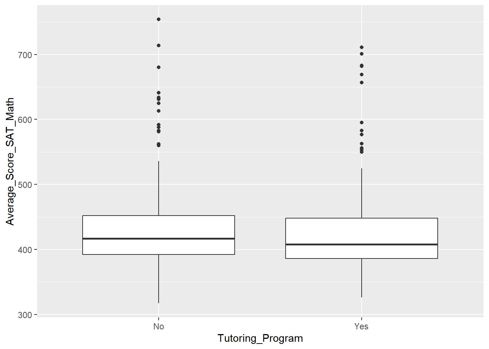
# Build the boxplot for the percent black vs. Math SAT score
ggplot(nyc_scores,
aes(Percent_Black_HL, Average_Score_SAT_Math)) +
geom_boxplot()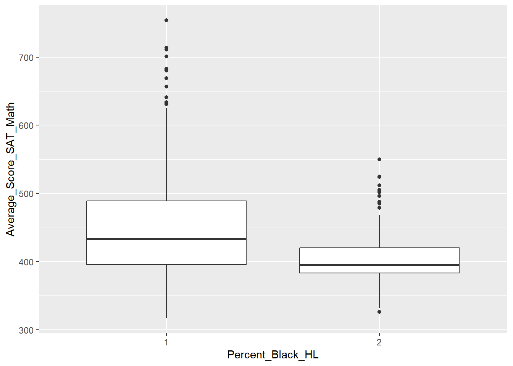
# Build the boxplot for percent tested vs. Math SAT score
ggplot(nyc_scores,
aes(Percent_Tested_HL, Average_Score_SAT_Math)) +
geom_boxplot()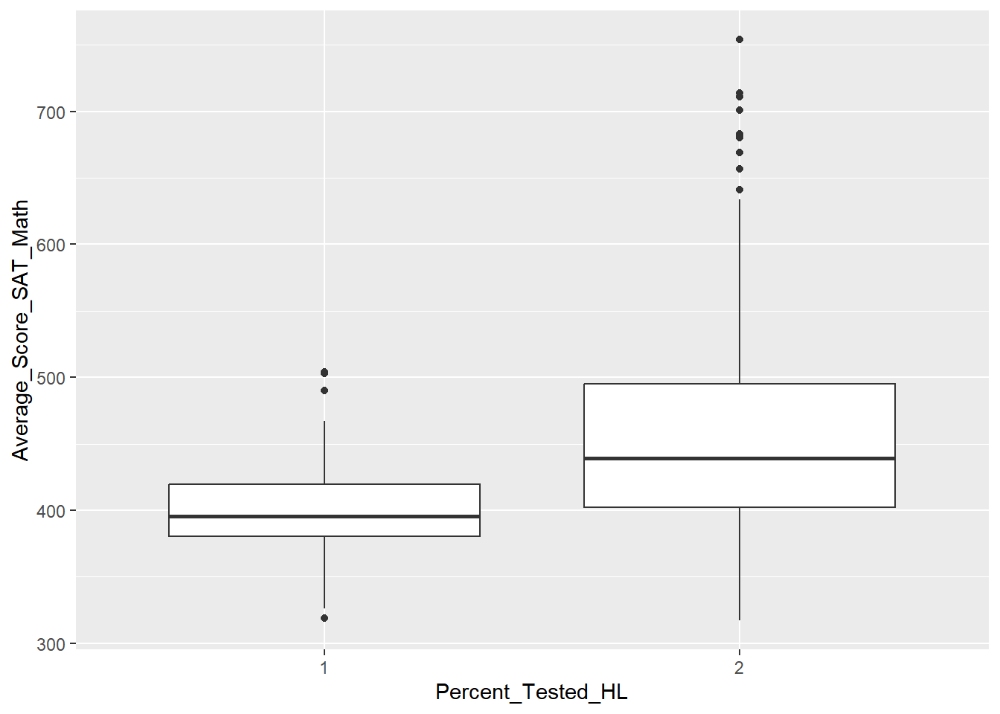
18.4.3.2 Factorial Experiment with NYC SAT Scores
Now we want to examine the effect of tutoring programs on the NYC schools’ SAT Math score. As noted in the last exercise: the variable Tutoring_Program is simply yes or no, depending on if a school got a tutoring program implemented. For Percent_Black_HL and Percent_Tested_HL, HL stands for high/low. A 1 indicates less than 50% Black students or overall students tested, and a 2 indicates greater than 50% of both.
Remember that because we intend to test all of the possible combinations of factor levels, we need to write the formula like: outcome ~ factor1 * factor2 * factor3.
# Create nyc_scores_factorial and examine the results
nyc_scores_factorial <- aov(Average_Score_SAT_Math ~ Percent_Tested_HL * Percent_Black_HL * Tutoring_Program, data = nyc_scores)
tidy(nyc_scores_factorial)## # A tibble: 8 × 6
## term df sumsq meansq statistic p.value
## <chr> <dbl> <dbl> <dbl> <dbl> <dbl>
## 1 Percent_Tested_HL 1 3.89e5 3.89e5 129. 2.91e-26
## 2 Percent_Black_HL 1 1.78e5 1.78e5 58.8 1.20e-13
## 3 Tutoring_Program 1 5.20e3 5.20e3 1.72 1.90e- 1
## 4 Percent_Tested_HL:Percent_Black_HL 1 1.02e5 1.02e5 33.7 1.23e- 8
## 5 Percent_Tested_HL:Tutoring_Program 1 4.33e3 4.33e3 1.43 2.32e- 1
## 6 Percent_Black_HL:Tutoring_Program 1 6.30e3 6.30e3 2.08 1.50e- 1
## 7 Percent_Tested_HL:Percent_Black_HL:Tu… 1 6.20e3 6.20e3 2.05 1.53e- 1
## 8 Residuals 427 1.29e6 3.02e3 NA NAWe can see from the results that we can not reject the null hypothesis that there is no difference in score based on tutoring program availability.
We can also see from the low p-values that there are some interaction effects between the Percent Black and Percent Tested and the tutoring program. Next we need to check the model.
18.4.3.3 Evaluating the Factorial Model
We need to examine both if our outcome and our model residuals are normally distributed. We’ll check the normality assumption using shapiro.test().
A low p-value means we can reject the null hypothesis that the sample came from a normally distributed population.
Test the outcome Average_Score_SAT_Math from nyc_scores for normality using shapiro.test().
# Use shapiro.test() to test the outcome
shapiro.test(nyc_scores$Average_Score_SAT_Math)##
## Shapiro-Wilk normality test
##
## data: nyc_scores$Average_Score_SAT_Math
## W = 0.8, p-value <0.0000000000000002# Plot nyc_scores_factorial to examine residuals
par(mfrow = c(2,2))
plot(nyc_scores_factorial)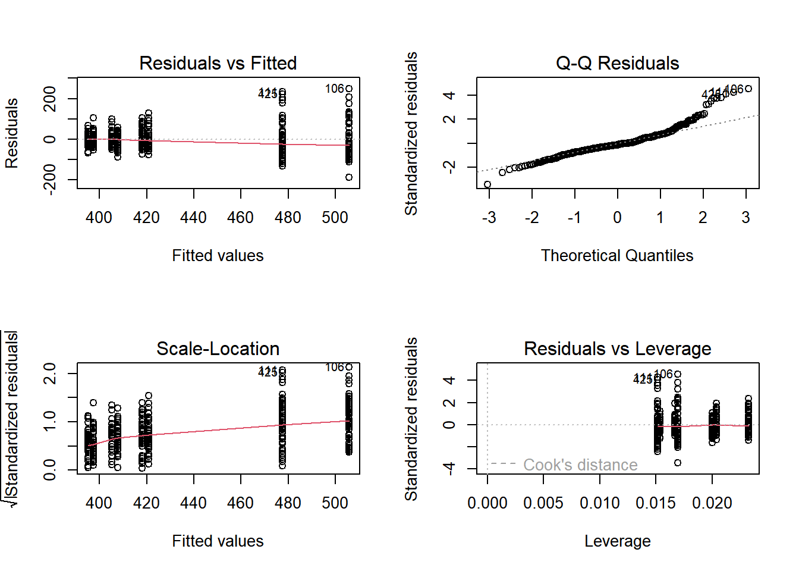
The model appears to be fairly well fit, though our evidence indicates the score may not be from a normally distributed population. Looking at the Q-Q plot, we can see that towards the higher end, the points are not on the line.